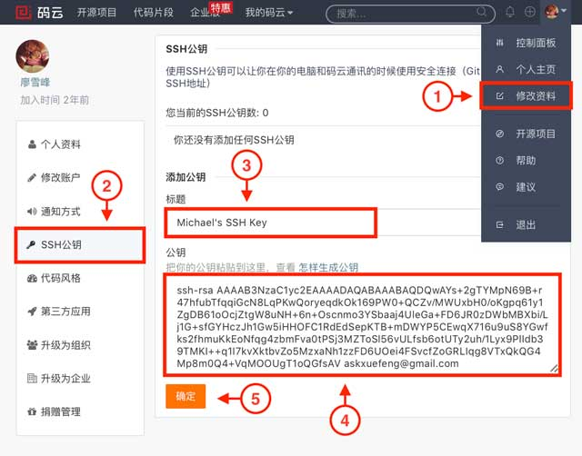
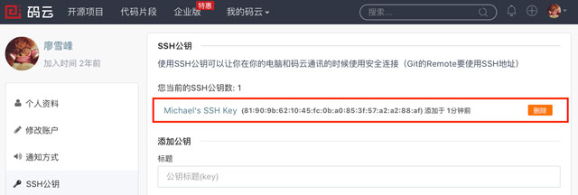
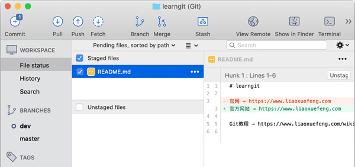
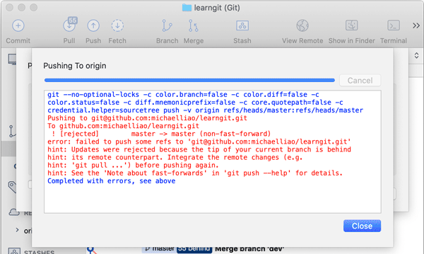

[搬]Git 教程--廖雪峰
廖雪峰Git教程链接：https://www.liaoxuefeng.com/wiki/896043488029600
Git大全：https://gitee.com/all-about-git
Git命令在线学习：https://oschina.gitee.io/learn-git-branching/
史上最浅显易懂的Git教程！
为什么要编写这个教程？因为我在学习Git的过程中，买过书，也在网上Google了一堆Git相关的文章和教程，但令人失望的是，这些教程不是难得令人发指，就是简单得一笔带过，或者，只支离破碎地介绍Git的某几个命令，还有直接从Git手册粘贴帮助文档的，总之，初学者很难找到一个由浅入深，学完后能立刻上手的Git教程。
既然号称史上最浅显易懂的Git教程，那这个教程有什么让你怦然心动的特点呢？
首先，本教程绝对面向初学者，没有接触过版本控制概念的读者也可以轻松入门，不必担心起步难度；
其次，本教程实用性超强，边学边练，一点也不觉得枯燥。而且，你所学的Git命令是“充分且必要”的，掌握了这些东西，你就可以通过Git轻松地完成你的工作。 文字+图片还看不明白？有视频！！！
本教程只会让你成为Git用户，不会让你成为Git专家。很多Git命令只有那些专家才明白（事实上我也不明白，因为我不是Git专家），但我保证这些命令可能你一辈子都不会用到。既然Git是一个工具，就没必要把时间浪费在那些“高级”但几乎永远不会用到的命令上。一旦你真的非用不可了，到时候再自行Google或者请教专家也未迟。
如果你是一个开发人员，想用上这个世界上目前最先进的分布式版本控制系统，那么，赶快开始学习吧！
1 Git 简介
Git是什么？
Git是目前世界上最先进的分布式版本控制系统（没有之一）。
Git有什么特点？简单来说就是：高端大气上档次！
那什么是版本控制系统？
如果你用Microsoft Word写过长篇大论，那你一定有这样的经历：
想删除一个段落，又怕将来想恢复找不回来怎么办？有办法，先把当前文件“另存为……”一个新的Word文件，再接着改，改到一定程度，再“另存为……”一个新文件，这样一直改下去，最后你的Word文档变成了这样：

过了一周，你想找回被删除的文字，但是已经记不清删除前保存在哪个文件里了，只好一个一个文件去找，真麻烦。
看着一堆乱七八糟的文件，想保留最新的一个，然后把其他的删掉，又怕哪天会用上，还不敢删，真郁闷。
更要命的是，有些部分需要你的财务同事帮助填写，于是你把文件Copy到U盘里给她（也可能通过Email发送一份给她），然后，你继续修改Word文件。一天后，同事再把Word文件传给你，此时，你必须想想，发给她之后到你收到她的文件期间，你作了哪些改动，得把你的改动和她的部分合并，真困难。
于是你想，如果有一个软件，不但能自动帮我记录每次文件的改动，还可以让同事协作编辑，这样就不用自己管理一堆类似的文件了，也不需要把文件传来传去。如果想查看某次改动，只需要在软件里瞄一眼就可以，岂不是很方便？
这个软件用起来就应该像这个样子，能记录每次文件的改动：
这样，你就结束了手动管理多个“版本”的史前时代，进入到版本控制的20世纪。
1 Git的诞生
很多人都知道，Linus在1991年创建了开源的Linux，从此，Linux系统不断发展，已经成为最大的服务器系统软件了。
Linus虽然创建了Linux，但Linux的壮大是靠全世界热心的志愿者参与的，这么多人在世界各地为Linux编写代码，那Linux的代码是如何管理的呢？
事实是，在2002年以前，世界各地的志愿者把源代码文件通过diff的方式发给Linus，然后由Linus本人通过手工方式合并代码！
你也许会想，为什么Linus不把Linux代码放到版本控制系统里呢？不是有CVS、SVN这些免费的版本控制系统吗？因为Linus坚定地反对CVS和SVN，这些集中式的版本控制系统不但速度慢，而且必须联网才能使用。有一些商用的版本控制系统，虽然比CVS、SVN好用，但那是付费的，和Linux的开源精神不符。
不过，到了2002年，Linux系统已经发展了十年了，代码库之大让Linus很难继续通过手工方式管理了，社区的弟兄们也对这种方式表达了强烈不满，于是Linus选择了一个商业的版本控制系统BitKeeper，BitKeeper的东家BitMover公司出于人道主义精神，授权Linux社区免费使用这个版本控制系统。
安定团结的大好局面在2005年就被打破了，原因是Linux社区牛人聚集，不免沾染了一些梁山好汉的江湖习气。开发Samba的Andrew试图破解BitKeeper的协议（这么干的其实也不只他一个），被BitMover公司发现了（监控工作做得不错！），于是BitMover公司怒了，要收回Linux社区的免费使用权。
Linus可以向BitMover公司道个歉，保证以后严格管教弟兄们，嗯，这是不可能的。实际情况是这样的：
Linus花了两周时间自己用C写了一个分布式版本控制系统，这就是Git！一个月之内，Linux系统的源码已经由Git管理了！牛是怎么定义的呢？大家可以体会一下。
Git迅速成为最流行的分布式版本控制系统，尤其是2008年，GitHub网站上线了，它为开源项目免费提供Git存储，无数开源项目开始迁移至GitHub，包括jQuery，PHP，Ruby等等。
历史就是这么偶然，如果不是当年BitMover公司威胁Linux社区，可能现在我们就没有免费而超级好用的Git了。
2 集中式vs分布式
Linus一直痛恨的CVS及SVN都是集中式的版本控制系统，而Git是分布式版本控制系统，集中式和分布式版本控制系统有什么区别呢？
先说集中式版本控制系统，版本库是集中存放在中央服务器的，而干活的时候，用的都是自己的电脑，所以要先从中央服务器取得最新的版本，然后开始干活，干完活了，再把自己的活推送给中央服务器。中央服务器就好比是一个图书馆，你要改一本书，必须先从图书馆借出来，然后回到家自己改，改完了，再放回图书馆。

集中式版本控制系统最大的毛病就是必须联网才能工作，如果在局域网内还好，带宽够大，速度够快，可如果在互联网上，遇到网速慢的话，可能提交一个10M的文件就需要5分钟，这还不得把人给憋死啊。
那分布式版本控制系统与集中式版本控制系统有何不同呢？首先，分布式版本控制系统根本没有“中央服务器”，每个人的电脑上都是一个完整的版本库，这样，你工作的时候，就不需要联网了，因为版本库就在你自己的电脑上。既然每个人电脑上都有一个完整的版本库，那多个人如何协作呢？比方说你在自己电脑上改了文件A，你的同事也在他的电脑上改了文件A，这时，你们俩之间只需把各自的修改推送给对方，就可以互相看到对方的修改了。
和集中式版本控制系统相比，分布式版本控制系统的安全性要高很多，因为每个人电脑里都有完整的版本库，某一个人的电脑坏掉了不要紧，随便从其他人那里复制一个就可以了。而集中式版本控制系统的中央服务器要是出了问题，所有人都没法干活了。
在实际使用分布式版本控制系统的时候，其实很少在两人之间的电脑上推送版本库的修改，因为可能你们俩不在一个局域网内，两台电脑互相访问不了，也可能今天你的同事病了，他的电脑压根没有开机。因此，分布式版本控制系统通常也有一台充当“中央服务器”的电脑，但这个服务器的作用仅仅是用来方便“交换”大家的修改，没有它大家也一样干活，只是交换修改不方便而已。

当然，Git的优势不单是不必联网这么简单，后面我们还会看到Git极其强大的分支管理，把SVN等远远抛在了后面。
CVS作为最早的开源而且免费的集中式版本控制系统，直到现在还有不少人在用。由于CVS自身设计的问题，会造成提交文件不完整，版本库莫名其妙损坏的情况。同样是开源而且免费的SVN修正了CVS的一些稳定性问题，是目前用得最多的集中式版本库控制系统。
除了免费的外，还有收费的集中式版本控制系统，比如IBM的ClearCase（以前是Rational公司的，被IBM收购了），特点是安装比Windows还大，运行比蜗牛还慢，能用ClearCase的一般是世界500强，他们有个共同的特点是财大气粗，或者人傻钱多。
微软自己也有一个集中式版本控制系统叫VSS，集成在Visual Studio中。由于其反人类的设计，连微软自己都不好意思用了。
分布式版本控制系统除了Git以及促使Git诞生的BitKeeper外，还有类似Git的Mercurial和Bazaar等。这些分布式版本控制系统各有特点，但最快、最简单也最流行的依然是Git！
1.1 安装Git
最早Git是在Linux上开发的，很长一段时间内，Git也只能在Linux和Unix系统上跑。不过，慢慢地有人把它移植到了Windows上。现在，Git可以在Linux、Unix、Mac和Windows这几大平台上正常运行了。
要使用Git，第一步当然是安装Git了。根据你当前使用的平台来阅读下面的文字：
1 在Linux上安装Git
首先，你可以试着输入git，看看系统有没有安装Git：
$ git
The program 'git' is currently not installed. You can install it by typing:
sudo apt-get install git
像上面的命令，有很多Linux会友好地告诉你Git没有安装，还会告诉你如何安装Git。
如果你碰巧用Debian或Ubuntu Linux，通过一条sudo apt-get install git就可以直接完成Git的安装，非常简单。
老一点的Debian或Ubuntu Linux，要把命令改为sudo apt-get install git-core，因为以前有个软件也叫GIT（GNU Interactive Tools），结果Git就只能叫git-core了。由于Git名气实在太大，后来就把GNU Interactive Tools改成gnuit，git-core正式改为git。
如果是其他Linux版本，可以直接通过源码安装。先从Git官网下载源码，然后解压，依次输入：./config，make，sudo make install这几个命令安装就好了。
2 在Mac OS X上安装Git
如果你正在使用Mac做开发，有两种安装Git的方法。
一是安装homebrew，然后通过homebrew安装Git，具体方法请参考homebrew的文档：http://brew.sh/。
第二种方法更简单，也是推荐的方法，就是直接从AppStore安装Xcode，Xcode集成了Git，不过默认没有安装，你需要运行Xcode，选择菜单“Xcode”->“Preferences”，在弹出窗口中找到“Downloads”，选择“Command Line Tools”，点“Install”就可以完成安装了。

Xcode是Apple官方IDE，功能非常强大，是开发Mac和iOS App的必选装备，而且是免费的！
3 在Windows上安装Git
在Windows上使用Git，可以从Git官网直接下载安装程序，然后按默认选项安装即可。
安装完成后，在开始菜单里找到“Git”->“Git Bash”，蹦出一个类似命令行窗口的东西，就说明Git安装成功！

安装完成后，还需要最后一步设置，在命令行输入：
$ git config --global user.name "Your Name"
$ git config --global user.email "email@example.com"
因为Git是分布式版本控制系统，所以，每个机器都必须自报家门：你的名字和Email地址。你也许会担心，如果有人故意冒充别人怎么办？这个不必担心，首先我们相信大家都是善良无知的群众，其次，真的有冒充的也是有办法可查的。
注意git config命令的--global参数，用了这个参数，表示你这台机器上所有的Git仓库都会使用这个配置，当然也可以对某个仓库指定不同的用户名和Email地址。
1.2 创建版本库
1 创建版本库
什么是版本库呢？版本库又名仓库，英文名repository，你可以简单理解成一个目录，这个目录里面的所有文件都可以被Git管理起来，每个文件的修改、删除，Git都能跟踪，以便任何时刻都可以追踪历史，或者在将来某个时刻可以“还原”。
所以，创建一个版本库非常简单，首先，选择一个合适的地方，创建一个空目录：
$ mkdir learngit
$ cd learngit
$ pwd
/Users/michael/learngit
pwd命令用于显示当前目录。在我的Mac上，这个仓库位于/Users/michael/learngit。
如果你使用 Windows 系统，为了避免遇到各种莫名其妙的问题，请确保目录名（包括父目录）不包含中文。
第二步，通过git init命令把这个目录变成 Git 可以管理的仓库：
$ git init
Initialized empty Git repository in /Users/michael/learngit/.git/
瞬间Git就把仓库建好了，而且告诉你是一个空的仓库（empty Git repository），细心的读者可以发现当前目录下多了一个.git的目录，这个目录是Git来跟踪管理版本库的，没事千万不要手动修改这个目录里面的文件，不然改乱了，就把Git仓库给破坏了。
如果你没有看到.git目录，那是因为这个目录默认是隐藏的，用ls -ah命令就可以看见。
也不一定必须在空目录下创建Git仓库，选择一个已经有东西的目录也是可以的。不过，不建议你使用自己正在开发的公司项目来学习Git，否则造成的一切后果概不负责。
2 把文件添加到版本库
首先这里再明确一下，所有的版本控制系统，其实只能跟踪文本文件的改动，比如TXT文件，网页，所有的程序代码等等，Git也不例外。版本控制系统可以告诉你每次的改动，比如在第5行加了一个单词“Linux”，在第8行删了一个单词“Windows”。而图片、视频这些二进制文件，虽然也能由版本控制系统管理，但没法跟踪文件的变化，只能把二进制文件每次改动串起来，也就是只知道图片从100KB改成了120KB，但到底改了啥，版本控制系统不知道，也没法知道。
不幸的是，Microsoft的Word格式是二进制格式，因此，版本控制系统是没法跟踪Word文件的改动的，前面我们举的例子只是为了演示，如果要真正使用版本控制系统，就要以纯文本方式编写文件。
因为文本是有编码的，比如中文有常用的GBK编码，日文有Shift_JIS编码，如果没有历史遗留问题，强烈建议使用标准的UTF-8编码，所有语言使用同一种编码，既没有冲突，又被所有平台所支持。
使用Windows的童鞋要特别注意： 千万不要使用Windows自带的记事本编辑任何文本文件。原因是Microsoft开发记事本的团队使用了一个非常弱智的行为来保存UTF-8编码的文件，他们自作聪明地在每个文件开头添加了0xefbbbf（十六进制）的字符，你会遇到很多不可思议的问题，比如，网页第一行可能会显示一个“?”，明明正确的程序一编译就报语法错误，等等，都是由记事本的弱智行为带来的。建议你下载Visual Studio Code代替记事本，不但功能强大，而且免费！
言归正传，现在我们编写一个readme.txt文件，内容如下：
Git is a version control system.
Git is free software.
一定要放到learngit目录下（子目录也行），因为这是一个Git仓库，放到其他地方Git再厉害也找不到这个文件。
和把大象放到冰箱需要3步相比，把一个文件放到Git仓库只需要两步。
第一步，用命令git add告诉Git，把文件添加到仓库：
$ git add readme.txt
执行上面的命令，没有任何显示，这就对了，Unix的哲学是“没有消息就是好消息”，说明添加成功。
第二步，用命令git commit告诉Git，把文件提交到仓库：
$ git commit -m "wrote a readme file"
[master (root-commit) eaadf4e] wrote a readme file
1 file changed, 2 insertions(+)
create mode 100644 readme.txt
简单解释一下git commit命令，-m后面输入的是本次提交的说明，可以输入任意内容，当然最好是有意义的，这样你就能从历史记录里方便地找到改动记录。
嫌麻烦不想输入-m "xxx"行不行？确实有办法可以这么干，但是强烈不建议你这么干，因为输入说明对自己对别人阅读都很重要。实在不想输入说明的童鞋请自行Google，我不告诉你这个参数。
git commit命令执行成功后会告诉你，1 file changed：1个文件被改动（我们新添加的readme.txt文件）；2 insertions：插入了两行内容（readme.txt有两行内容）。
为什么Git添加文件需要add，commit一共两步呢？因为commit可以一次提交很多文件，所以你可以多次add不同的文件，比如：
$ git add file1.txt
$ git add file2.txt file3.txt
$ git commit -m "add 3 files."
3 疑难解答
Q：输入git add readme.txt，得到错误：fatal: not a git repository (or any of the parent directories)。
A：Git命令必须在Git仓库目录内执行（git init除外），在仓库目录外执行是没有意义的。
Q：输入git add readme.txt，得到错误fatal: pathspec 'readme.txt' did not match any files。
A：添加某个文件时，该文件必须在当前目录下存在，用ls或者dir命令查看当前目录的文件，看看文件是否存在，或者是否写错了文件名。
4 小结
现在总结一下今天学的两点内容：
初始化一个Git仓库，使用git init命令。
添加文件到Git仓库，分两步：
使用命令git add <file>，注意，可反复多次使用，添加多个文件；
使用命令git commit -m <message>，完成。
2 时光机穿梭
1 时光机穿梭
我们已经成功地添加并提交了一个readme.txt文件，现在，是时候继续工作了，于是，我们继续修改readme.txt文件，改成如下内容：
Git is a distributed version control system.
Git is free software.
现在，运行git status命令看看结果：
$ git status
On branch master
Changes not staged for commit:
(use "git add <file>..." to update what will be committed)
(use "git checkout -- <file>..." to discard changes in working directory)
modified: readme.txt
no changes added to commit (use "git add" and/or "git commit -a")
git status命令可以让我们时刻掌握仓库当前的状态，上面的命令输出告诉我们，readme.txt被修改过了，但还没有准备提交的修改。
虽然Git告诉我们readme.txt被修改了，但如果能看看具体修改了什么内容，自然是很好的。比如你休假两周从国外回来，第一天上班时，已经记不清上次怎么修改的readme.txt，所以，需要用git diff这个命令看看：
$ git diff readme.txt
diff --git a/readme.txt b/readme.txt
index 46d49bf..9247db6 100644
--- a/readme.txt
+++ b/readme.txt
@@ -1,2 +1,2 @@
-Git is a version control system.
+Git is a distributed version control system.
Git is free software.
git diff顾名思义就是查看difference，显示的格式正是Unix通用的diff格式，可以从上面的命令输出看到，我们在第一行添加了一个distributed单词。
知道了对readme.txt作了什么修改后，再把它提交到仓库就放心多了，提交修改和提交新文件是一样的两步，第一步是git add
$ git add readme.txt
同样没有任何输出。在执行第二步git commit之前，我们再运行git status看看当前仓库的状态：
$ git status
On branch master
Changes to be committed:
(use "git reset HEAD <file>..." to unstage)
modified: readme.txt
git status告诉我们，将要被提交的修改包括readme.txt，下一步，就可以放心地提交了：
$ git commit -m "add distributed"
[master e475afc] add distributed
1 file changed, 1 insertion(+), 1 deletion(-)
提交后，我们再用git status命令看看仓库的当前状态：
$ git status
On branch master
nothing to commit, working tree clean
Git告诉我们当前没有需要提交的修改，而且，工作目录是干净（working tree clean）的。
2 小结
要随时掌握工作区的状态，使用`git status`命令。
如果`git status`告诉你有文件被修改过，用`git diff`可以查看修改内容。
2.1 版本回退
1 版本回退
现在，你已经学会了修改文件，然后把修改提交到Git版本库，现在，再练习一次，修改readme.txt文件如下：
Git is a distributed version control system.
Git is free software distributed under the GPL.
然后尝试提交：
$ git add readme.txt
$ git commit -m "append GPL"
[master 1094adb] append GPL
1 file changed, 1 insertion(+), 1 deletion(-)
像这样，你不断对文件进行修改，然后不断提交修改到版本库里，就好比玩RPG游戏时，每通过一关就会自动把游戏状态存盘，如果某一关没过去，你还可以选择读取前一关的状态。有些时候，在打Boss之前，你会手动存盘，以便万一打Boss失败了，可以从最近的地方重新开始。Git也是一样，每当你觉得文件修改到一定程度的时候，就可以“保存一个快照”，这个快照在Git中被称为commit。一旦你把文件改乱了，或者误删了文件，还可以从最近的一个commit恢复，然后继续工作，而不是把几个月的工作成果全部丢失。
现在，我们回顾一下readme.txt文件一共有几个版本被提交到Git仓库里了：
版本1：wrote a readme file
Git is a version control system.
Git is free software.
版本2：add distributed
Git is a distributed version control system.
Git is free software.
版本3：append GPL
Git is a distributed version control system.
Git is free software distributed under the GPL.
当然了，在实际工作中，我们脑子里怎么可能记得一个几千行的文件每次都改了什么内容，不然要版本控制系统干什么。版本控制系统肯定有某个命令可以告诉我们历史记录，在Git中，我们用git log命令查看：
$ git log
commit 1094adb7b9b3807259d8cb349e7df1d4d6477073 (HEAD -> master)
Author: Michael Liao <askxuefeng@gmail.com>
Date: Fri May 18 21:06:15 2018 +0800
append GPL
commit e475afc93c209a690c39c13a46716e8fa000c366
Author: Michael Liao <askxuefeng@gmail.com>
Date: Fri May 18 21:03:36 2018 +0800
add distributed
commit eaadf4e385e865d25c48e7ca9c8395c3f7dfaef0
Author: Michael Liao <askxuefeng@gmail.com>
Date: Fri May 18 20:59:18 2018 +0800
wrote a readme file
git log命令显示从最近到最远的提交日志，我们可以看到3次提交，最近的一次是append GPL，上一次是add distributed，最早的一次是wrote a readme file。
如果嫌输出信息太多，看得眼花缭乱的，可以试试加上--pretty=oneline参数：
$ git log --pretty=oneline
1094adb7b9b3807259d8cb349e7df1d4d6477073 (HEAD -> master) append GPL
e475afc93c209a690c39c13a46716e8fa000c366 add distributed
eaadf4e385e865d25c48e7ca9c8395c3f7dfaef0 wrote a readme file
需要友情提示的是，你看到的一大串类似1094adb...的是commit id（版本号），和SVN不一样，Git的commit id不是1，2，3……递增的数字，而是一个SHA1计算出来的一个非常大的数字，用十六进制表示，而且你看到的commit id和我的肯定不一样，以你自己的为准。为什么commit id需要用这么一大串数字表示呢？因为Git是分布式的版本控制系统，后面我们还要研究多人在同一个版本库里工作，如果大家都用1，2，3……作为版本号，那肯定就冲突了。
每提交一个新版本，实际上Git就会把它们自动串成一条时间线。如果使用可视化工具查看Git历史，就可以更清楚地看到提交历史的时间线：

好了，现在我们启动时光穿梭机，准备把readme.txt回退到上一个版本，也就是add distributed的那个版本，怎么做呢？
首先，Git必须知道当前版本是哪个版本，在Git中，用HEAD表示当前版本，也就是最新的提交1094adb...（注意我的提交ID和你的肯定不一样），上一个版本就是HEAD^，上上一个版本就是HEAD^^，当然往上100个版本写100个^比较容易数不过来，所以写成HEAD~100。
现在，我们要把当前版本append GPL回退到上一个版本add distributed，就可以使用git reset命令：
$ git reset --hard HEAD^
HEAD is now at e475afc add distributed
--hard参数有啥意义？这个后面再讲，现在你先放心使用。
看看readme.txt的内容是不是版本add distributed：
$ cat readme.txt
Git is a distributed version control system.
Git is free software.
果然被还原了。
还可以继续回退到上一个版本wrote a readme file，不过且慢，让我们用git log再看看现在版本库的状态：
$ git log
commit e475afc93c209a690c39c13a46716e8fa000c366 (HEAD -> master)
Author: Michael Liao <askxuefeng@gmail.com>
Date: Fri May 18 21:03:36 2018 +0800
add distributed
commit eaadf4e385e865d25c48e7ca9c8395c3f7dfaef0
Author: Michael Liao <askxuefeng@gmail.com>
Date: Fri May 18 20:59:18 2018 +0800
wrote a readme file
最新的那个版本append GPL已经看不到了！好比你从21世纪坐时光穿梭机来到了19世纪，想再回去已经回不去了，肿么办？
办法其实还是有的，只要上面的命令行窗口还没有被关掉，你就可以顺着往上找啊找啊，找到那个append GPL的commit id是1094adb...，于是就可以指定回到未来的某个版本：
$ git reset --hard 1094a
HEAD is now at 83b0afe append GPL
版本号没必要写全，前几位就可以了，Git会自动去找。当然也不能只写前一两位，因为Git可能会找到多个版本号，就无法确定是哪一个了。
再小心翼翼地看看readme.txt的内容：
$ cat readme.txt
Git is a distributed version control system.
Git is free software distributed under the GPL.
果然，我胡汉三又回来了。
Git的版本回退速度非常快，因为Git在内部有个指向当前版本的HEAD指针，当你回退版本的时候，Git仅仅是把HEAD从指向append GPL：
然后顺便把工作区的文件更新了。所以你让HEAD指向哪个版本号，你就把当前版本定位在哪。
现在，你回退到了某个版本，关掉了电脑，第二天早上就后悔了，想恢复到新版本怎么办？找不到新版本的commit id怎么办？
在Git中，总是有后悔药可以吃的。当你用$ git reset --hard HEAD^回退到add distributed版本时，再想恢复到append GPL，就必须找到append GPL的commit id。Git提供了一个命令git reflog用来记录你的每一次命令：
$ git reflog
e475afc HEAD@{1}: reset: moving to HEAD^
1094adb (HEAD -> master) HEAD@{2}: commit: append GPL
e475afc HEAD@{3}: commit: add distributed
eaadf4e HEAD@{4}: commit (initial): wrote a readme file
终于舒了口气，从输出可知，append GPL的commit id是1094adb，现在，你又可以乘坐时光机回到未来了。
2 小结
现在总结一下：
`HEAD`指向的版本就是当前版本，因此，Git允许我们在版本的历史之间穿梭，使用命令`git reset --hard commit_id`。
穿梭前，用`git log`可以查看提交历史，以便确定要回退到哪个版本。
要重返未来，用`git reflog`查看命令历史，以便确定要回到未来的哪个版本
2.2 工作区和暂存区
1 工作区和暂存区
Git和其他版本控制系统如SVN的一个不同之处就是有暂存区的概念。
先来看名词解释。
1.1 工作区（Working Directory）
就是你在电脑里能看到的目录，比如我的learngit文件夹就是一个工作区：

1.2 版本库（Repository）
工作区有一个隐藏目录.git，这个不算工作区，而是Git的版本库。
Git的版本库里存了很多东西，其中最重要的就是称为stage（或者叫index）的暂存区，还有Git为我们自动创建的第一个分支master，以及指向master的一个指针叫HEAD。

分支和HEAD的概念我们以后再讲。
前面讲了我们把文件往Git版本库里添加的时候，是分两步执行的：
第一步：用git add把文件添加进去，实际上就是把文件修改添加到暂存区；
第二步：用git commit提交更改，实际上就是把暂存区的所有内容提交到当前分支。
因为我们创建Git版本库时，Git自动为我们创建了唯一一个master分支，所以，现在，git commit就是往master分支上提交更改。
你可以简单理解为，需要提交的文件修改通通放到暂存区，然后，一次性提交暂存区的所有修改。
俗话说，实践出真知。现在，我们再练习一遍，先对readme.txt做个修改，比如加上一行内容：
Git is a distributed version control system.
Git is free software distributed under the GPL.
Git has a mutable index called stage.
然后，在工作区新增一个LICENSE文本文件（内容随便写）。
先用git status查看一下状态：
$ git status
On branch master
Changes not staged for commit:
(use "git add <file>..." to update what will be committed)
(use "git checkout -- <file>..." to discard changes in working directory)
modified: readme.txt
Untracked files:
(use "git add <file>..." to include in what will be committed)
LICENSE
no changes added to commit (use "git add" and/or "git commit -a")
Git非常清楚地告诉我们，readme.txt被修改了，而LICENSE还从来没有被添加过，所以它的状态是Untracked。
现在，使用两次命令git add，把readme.txt和LICENSE都添加后，用git status再查看一下：
$ git status
On branch master
Changes to be committed:
(use "git reset HEAD <file>..." to unstage)
new file: LICENSE
modified: readme.txt
现在，暂存区的状态就变成这样了：

所以，git add命令实际上就是把要提交的所有修改放到暂存区（Stage），然后，执行git commit就可以一次性把暂存区的所有修改提交到分支。
$ git commit -m "understand how stage works"
[master e43a48b] understand how stage works
2 files changed, 2 insertions(+)
create mode 100644 LICENSE
一旦提交后，如果你又没有对工作区做任何修改，那么工作区就是“干净”的：
$ git status
On branch master
nothing to commit, working tree clean
现在版本库变成了这样，暂存区就没有任何内容了：

2 小结
暂存区是Git非常重要的概念，弄明白了暂存区，就弄明白了Git的很多操作到底干了什么。
没弄明白暂存区是怎么回事的童鞋，请向上滚动页面，再看一次。
2.3 管理修改
1 管理修改
现在，假定你已经完全掌握了暂存区的概念。下面，我们要讨论的就是，为什么Git比其他版本控制系统设计得优秀，因为Git跟踪并管理的是修改，而非文件。
你会问，什么是修改？比如你新增了一行，这就是一个修改，删除了一行，也是一个修改，更改了某些字符，也是一个修改，删了一些又加了一些，也是一个修改，甚至创建一个新文件，也算一个修改。
为什么说Git管理的是修改，而不是文件呢？我们还是做实验。第一步，对readme.txt做一个修改，比如加一行内容：
$ cat readme.txt
Git is a distributed version control system.
Git is free software distributed under the GPL.
Git has a mutable index called stage.
Git tracks changes.
然后，添加：
$ git add readme.txt
$ git status
On branch master
Changes to be committed:
(use "git reset HEAD <file>..." to unstage)
modified: readme.txt
然后，再修改readme.txt：
$ cat readme.txt
Git is a distributed version control system.
Git is free software distributed under the GPL.
Git has a mutable index called stage.
Git tracks changes of files.
提交：
$ git commit -m "git tracks changes"
[master 519219b] git tracks changes
1 file changed, 1 insertion(+)
提交后，再看看状态：
$ git status
On branch master
Changes not staged for commit:
(use "git add <file>..." to update what will be committed)
(use "git checkout -- <file>..." to discard changes in working directory)
modified: readme.txt
no changes added to commit (use "git add" and/or "git commit -a")
咦，怎么第二次的修改没有被提交？
别激动，我们回顾一下操作过程：
第一次修改 -> git add -> 第二次修改 -> git commit
你看，我们前面讲了，Git管理的是修改，当你用git add命令后，在工作区的第一次修改被放入暂存区，准备提交。但是，在工作区的第二次修改并没有放入暂存区，所以，git commit只负责把暂存区的修改提交了，也就是第一次的修改被提交了，第二次的修改不会被提交。
提交后，用git diff HEAD -- readme.txt命令可以查看工作区和版本库里面最新版本的区别：
$ git diff HEAD -- readme.txt
diff --git a/readme.txt b/readme.txt
index 76d770f..a9c5755 100644
--- a/readme.txt
+++ b/readme.txt
@@ -1,4 +1,4 @@
Git is a distributed version control system.
Git is free software distributed under the GPL.
Git has a mutable index called stage.
-Git tracks changes.
+Git tracks changes of files.
可见，第二次修改确实没有被提交。
那怎么提交第二次修改呢？你可以继续git add再git commit，也可以别着急提交第一次修改，先git add第二次修改，再git commit，就相当于把两次修改合并后一块提交了：
第一次修改 -> git add -> 第二次修改 -> git add -> git commit
好，现在，把第二次修改提交了，然后开始小结。
2 小结
现在，你又理解了Git是如何跟踪修改的，每次修改，如果不用git add到暂存区，那就不会加入到commit中。
2.4 撤销修改
1 撤销修改
自然，你是不会犯错的。不过现在是凌晨两点，你正在赶一份工作报告，你在readme.txt中添加了一行：
$ cat readme.txt
Git is a distributed version control system.
Git is free software distributed under the GPL.
Git has a mutable index called stage.
Git tracks changes of files.
My stupid boss still prefers SVN.
在你准备提交前，一杯咖啡起了作用，你猛然发现了stupid boss可能会让你丢掉这个月的奖金！
既然错误发现得很及时，就可以很容易地纠正它。你可以删掉最后一行，手动把文件恢复到上一个版本的状态。如果用git status查看一下：
$ git status
On branch master
Changes not staged for commit:
(use "git add <file>..." to update what will be committed)
(use "git checkout -- <file>..." to discard changes in working directory)
modified: readme.txt
no changes added to commit (use "git add" and/or "git commit -a")
你可以发现，Git会告诉你，git checkout -- file可以丢弃工作区的修改：
$ git checkout -- readme.txt
命令git checkout -- readme.txt意思就是，把readme.txt文件在工作区的修改全部撤销，这里有两种情况：
一种是readme.txt自修改后还没有被放到暂存区，现在，撤销修改就回到和版本库一模一样的状态；
一种是readme.txt已经添加到暂存区后，又作了修改，现在，撤销修改就回到添加到暂存区后的状态。
总之，就是让这个文件回到最近一次git commit或git add时的状态。
现在，看看readme.txt的文件内容：
$ cat readme.txt
Git is a distributed version control system.
Git is free software distributed under the GPL.
Git has a mutable index called stage.
Git tracks changes of files.
文件内容果然复原了。
git checkout -- file命令中的--很重要，没有--，就变成了“切换到另一个分支”的命令，我们在后面的分支管理中会再次遇到git checkout命令。
现在假定是凌晨3点，你不但写了一些胡话，还git add到暂存区了：
$ cat readme.txt
Git is a distributed version control system.
Git is free software distributed under the GPL.
Git has a mutable index called stage.
Git tracks changes of files.
My stupid boss still prefers SVN.
$ git add readme.txt
庆幸的是，在commit之前，你发现了这个问题。用git status查看一下，修改只是添加到了暂存区，还没有提交：
$ git status
On branch master
Changes to be committed:
(use "git reset HEAD <file>..." to unstage)
modified: readme.txt
Git同样告诉我们，用命令git reset HEAD <file>可以把暂存区的修改撤销掉（unstage），重新放回工作区：
$ git reset HEAD readme.txt
Unstaged changes after reset:
M readme.txt
git reset命令既可以回退版本，也可以把暂存区的修改回退到工作区。当我们用HEAD时，表示最新的版本。
再用git status查看一下，现在暂存区是干净的，工作区有修改：
$ git status
On branch master
Changes not staged for commit:
(use "git add <file>..." to update what will be committed)
(use "git checkout -- <file>..." to discard changes in working directory)
modified: readme.txt
还记得如何丢弃工作区的修改吗？
$ git checkout -- readme.txt
$ git status
On branch master
nothing to commit, working tree clean
整个世界终于清静了！
现在，假设你不但改错了东西，还从暂存区提交到了版本库，怎么办呢？还记得版本回退一节吗？可以回退到上一个版本。不过，这是有条件的，就是你还没有把自己的本地版本库推送到远程。还记得Git是分布式版本控制系统吗？我们后面会讲到远程版本库，一旦你把stupid boss提交推送到远程版本库，你就真的惨了……
2 小结
又到了小结时间。
场景1：当你改乱了工作区某个文件的内容，想直接丢弃工作区的修改时，用命令git checkout -- file。
场景2：当你不但改乱了工作区某个文件的内容，还添加到了暂存区时，想丢弃修改，分两步，第一步用命令git reset HEAD
场景3：已经提交了不合适的修改到版本库时，想要撤销本次提交，参考版本回退一节，不过前提是没有推送到远程库。
2.5 删除文件
1 删除文件
在Git中，删除也是一个修改操作，我们实战一下，先添加一个新文件test.txt到Git并且提交：
$ git add test.txt
$ git commit -m "add test.txt"
[master b84166e] add test.txt
1 file changed, 1 insertion(+)
create mode 100644 test.txt
一般情况下，你通常直接在文件管理器中把没用的文件删了，或者用rm命令删了：
$ rm test.txt
这个时候，Git知道你删除了文件，因此，工作区和版本库就不一致了，git status命令会立刻告诉你哪些文件被删除了：
$ git status
On branch master
Changes not staged for commit:
(use "git add/rm <file>..." to update what will be committed)
(use "git checkout -- <file>..." to discard changes in working directory)
deleted: test.txt
no changes added to commit (use "git add" and/or "git commit -a")
现在你有两个选择，一是确实要从版本库中删除该文件，那就用命令git rm删掉，并且git commit：
$ git rm test.txt
rm 'test.txt'
$ git commit -m "remove test.txt"
[master d46f35e] remove test.txt
1 file changed, 1 deletion(-)
delete mode 100644 test.txt
现在，文件就从版本库中被删除了。
小提示：先手动删除文件，然后使用
git rm <file>和git add<file>效果是一样的。
另一种情况是删错了，因为版本库里还有呢，所以可以很轻松地把误删的文件恢复到最新版本：
$ git checkout -- test.txt
git checkout其实是用版本库里的版本替换工作区的版本，无论工作区是修改还是删除，都可以“一键还原”。
注意：从来没有被添加到版本库就被删除的文件，是无法恢复的！
2 小结
命令git rm用于删除一个文件。如果一个文件已经被提交到版本库，那么你永远不用担心误删。但是要小心，你只能恢复文件到最新版本，你会丢失最近一次提交后你修改的内容。
3 远程仓库
1 远程仓库
到目前为止，我们已经掌握了如何在Git仓库里对一个文件进行时光穿梭，你再也不用担心文件备份或者丢失的问题了。
可是有用过集中式版本控制系统SVN的童鞋会站出来说，这些功能在SVN里早就有了，没看出Git有什么特别的地方。
没错，如果只是在一个仓库里管理文件历史，Git和SVN真没啥区别。为了保证你现在所学的Git物超所值，将来绝对不会后悔，同时为了打击已经不幸学了SVN的童鞋，本章开始介绍Git的杀手级功能之一（注意是之一，也就是后面还有之二，之三……）：远程仓库。
Git是分布式版本控制系统，同一个Git仓库，可以分布到不同的机器上。怎么分布呢？最早，肯定只有一台机器有一个原始版本库，此后，别的机器可以“克隆”这个原始版本库，而且每台机器的版本库其实都是一样的，并没有主次之分。
你肯定会想，至少需要两台机器才能玩远程库不是？但是我只有一台电脑，怎么玩？
其实一台电脑上也是可以克隆多个版本库的，只要不在同一个目录下。不过，现实生活中是不会有人这么傻的在一台电脑上搞几个远程库玩，因为一台电脑上搞几个远程库完全没有意义，而且硬盘挂了会导致所有库都挂掉，所以我也不告诉你在一台电脑上怎么克隆多个仓库。
实际情况往往是这样，找一台电脑充当服务器的角色，每天24小时开机，其他每个人都从这个“服务器”仓库克隆一份到自己的电脑上，并且各自把各自的提交推送到服务器仓库里，也从服务器仓库中拉取别人的提交。
完全可以自己搭建一台运行Git的服务器，不过现阶段，为了学Git先搭个服务器绝对是小题大作。好在这个世界上有个叫GitHub的神奇的网站，从名字就可以看出，这个网站就是提供Git仓库托管服务的，所以，只要注册一个GitHub账号，就可以免费获得Git远程仓库。
在继续阅读后续内容前，请自行注册GitHub账号。由于你的本地Git仓库和GitHub仓库之间的传输是通过SSH加密的，所以，需要一点设置：
第1步：创建SSH Key。在用户主目录下，看看有没有.ssh目录，如果有，再看看这个目录下有没有id_rsa和id_rsa.pub这两个文件，如果已经有了，可直接跳到下一步。如果没有，打开Shell（Windows下打开Git Bash），创建SSH Key：
$ ssh-keygen -t rsa -C "youremail@example.com"
你需要把邮件地址换成你自己的邮件地址，然后一路回车，使用默认值即可，由于这个Key也不是用于军事目的，所以也无需设置密码。
如果一切顺利的话，可以在用户主目录里找到.ssh目录，里面有id_rsa和id_rsa.pub两个文件，这两个就是SSH Key的秘钥对，id_rsa是私钥，不能泄露出去，id_rsa.pub是公钥，可以放心地告诉任何人。
第2步：登陆GitHub，打开“Account settings”，“SSH Keys”页面：
然后，点“Add SSH Key”，填上任意Title，在Key文本框里粘贴id_rsa.pub文件的内容：

点“Add Key”，你就应该看到已经添加的Key：

为什么GitHub需要SSH Key呢？因为GitHub需要识别出你推送的提交确实是你推送的，而不是别人冒充的，而Git支持SSH协议，所以，GitHub只要知道了你的公钥，就可以确认只有你自己才能推送。
当然，GitHub允许你添加多个Key。假定你有若干电脑，你一会儿在公司提交，一会儿在家里提交，只要把每台电脑的Key都添加到GitHub，就可以在每台电脑上往GitHub推送了。
最后友情提示，在GitHub上免费托管的Git仓库，任何人都可以看到喔（但只有你自己才能改）。所以，不要把敏感信息放进去。
如果你不想让别人看到Git库，有两个办法，一个是交点保护费，让GitHub把公开的仓库变成私有的，这样别人就看不见了（不可读更不可写）。另一个办法是自己动手，搭一个Git服务器，因为是你自己的Git服务器，所以别人也是看不见的。这个方法我们后面会讲到的，相当简单，公司内部开发必备。
确保你拥有一个GitHub账号后，我们就即将开始远程仓库的学习。
2 小结
“有了远程仓库，妈妈再也不用担心我的硬盘了。”——Git点读机
3.1 添加远程库
1 添加远程库
现在的情景是，你已经在本地创建了一个Git仓库后，又想在GitHub创建一个Git仓库，并且让这两个仓库进行远程同步。这样，GitHub上的仓库既可以作为备份，又可以让其他人通过该仓库来协作，真是一举多得。
首先，登陆GitHub，然后，在右上角找到“Create a new repo”按钮，创建一个新的仓库：

在Repository name填入learngit，其他保持默认设置，点击“Create repository”按钮，就成功地创建了一个新的Git仓库：

目前，在GitHub上的这个learngit仓库还是空的。GitHub告诉我们，可以从这个仓库克隆出新的仓库，也可以把一个已有的本地仓库与之关联，然后，把本地仓库的内容推送到GitHub仓库。
现在，我们根据GitHub的提示，在本地的learngit仓库下运行命令：
$ git remote add origin git@github.com:michaelliao/learngit.git
请千万注意，把上面的michaelliao替换成你自己的GitHub账户名，否则，你在本地关联的就是我的远程库，关联没有问题，但是你以后推送是推不上去的，因为你的SSH Key公钥不在我的账户列表中。
添加后，远程库的名字就是origin，这是Git默认的叫法，也可以改成别的，但是origin这个名字一看就知道是远程库。
下一步，就可以把本地库的所有内容推送到远程库上：
$ git push -u origin master
Counting objects: 20, done.
Delta compression using up to 4 threads.
Compressing objects: 100% (15/15), done.
Writing objects: 100% (20/20), 1.64 KiB | 560.00 KiB/s, done.
Total 20 (delta 5), reused 0 (delta 0)
remote: Resolving deltas: 100% (5/5), done.
To github.com:michaelliao/learngit.git
* [new branch] master -> master
Branch 'master' set up to track remote branch 'master' from 'origin'.
把本地库的内容推送到远程，用git push命令，实际上是把当前分支master推送到远程。
由于远程库是空的，我们第一次推送master分支时，加上了-u参数，Git不但会把本地的master分支内容推送的远程新的master分支，还会把本地的master分支和远程的master分支关联起来，在以后的推送或者拉取时就可以简化命令。
推送成功后，可以立刻在GitHub页面中看到远程库的内容已经和本地一模一样：

从现在起，只要本地作了提交，就可以通过命令：
$ git push origin master
把本地master分支的最新修改推送至GitHub，现在，你就拥有了真正的分布式版本库！
2 SSH警告
当你第一次使用Git的clone或者push命令连接GitHub时，会得到一个警告：
The authenticity of host 'github.com (xx.xx.xx.xx)' can't be established.
RSA key fingerprint is xx.xx.xx.xx.xx.
Are you sure you want to continue connecting (yes/no)?
这是因为Git使用SSH连接，而SSH连接在第一次验证GitHub服务器的Key时，需要你确认GitHub的Key的指纹信息是否真的来自GitHub的服务器，输入yes回车即可。
Git会输出一个警告，告诉你已经把GitHub的Key添加到本机的一个信任列表里了：
Warning: Permanently added 'github.com' (RSA) to the list of known hosts.
这个警告只会出现一次，后面的操作就不会有任何警告了。
如果你实在担心有人冒充GitHub服务器，输入yes前可以对照GitHub的RSA Key的指纹信息是否与SSH连接给出的一致。
3 删除远程库
如果添加的时候地址写错了，或者就是想删除远程库，可以用git remote rm <name>命令。使用前，建议先用git remote -v查看远程库信息：
$ git remote -v
origin git@github.com:michaelliao/learn-git.git (fetch)
origin git@github.com:michaelliao/learn-git.git (push)
然后，根据名字删除，比如删除origin：
$ git remote rm origin
此处的“删除”其实是解除了本地和远程的绑定关系，并不是物理上删除了远程库。远程库本身并没有任何改动。要真正删除远程库，需要登录到GitHub，在后台页面找到删除按钮再删除。
4 小结
要关联一个远程库，使用命令git remote add origin git@server-name:path/repo-name.git；
关联一个远程库时必须给远程库指定一个名字，origin是默认习惯命名；
关联后，使用命令git push -u origin master第一次推送master分支的所有内容；
此后，每次本地提交后，只要有必要，就可以使用命令git push origin master推送最新修改；
分布式版本系统的最大好处之一是在本地工作完全不需要考虑远程库的存在，也就是有没有联网都可以正常工作，而SVN在没有联网的时候是拒绝干活的！当有网络的时候，再把本地提交推送一下就完成了同步，真是太方便了！
3.2 从远程库克隆
1 从远程库克隆
上次我们讲了先有本地库，后有远程库的时候，如何关联远程库。
现在，假设我们从零开发，那么最好的方式是先创建远程库，然后，从远程库克隆。
首先，登陆GitHub，创建一个新的仓库，名字叫gitskills：

我们勾选Initialize this repository with a README，这样GitHub会自动为我们创建一个README.md文件。创建完毕后，可以看到README.md文件：

现在，远程库已经准备好了，下一步是用命令git clone克隆一个本地库：
$ git clone git@github.com:michaelliao/gitskills.git
Cloning into 'gitskills'...
remote: Counting objects: 3, done.
remote: Total 3 (delta 0), reused 0 (delta 0), pack-reused 3
Receiving objects: 100% (3/3), done.
注意把Git库的地址换成你自己的，然后进入gitskills目录看看，已经有README.md文件了：
$ cd gitskills
$ ls
README.md
如果有多个人协作开发，那么每个人各自从远程克隆一份就可以了。
你也许还注意到，GitHub给出的地址不止一个，还可以用https://github.com/michaelliao/gitskills.git这样的地址。实际上，Git支持多种协议，默认的git://使用ssh，但也可以使用https等其他协议。
使用https除了速度慢以外，还有个最大的麻烦是每次推送都必须输入口令，但是在某些只开放http端口的公司内部就无法使用ssh协议而只能用https。
2 小结
要克隆一个仓库，首先必须知道仓库的地址，然后使用git clone命令克隆。
Git支持多种协议，包括https，但ssh协议速度最快。
4 分支管理
1 分支管理
分支就是科幻电影里面的平行宇宙，当你正在电脑前努力学习Git的时候，另一个你正在另一个平行宇宙里努力学习SVN。
如果两个平行宇宙互不干扰，那对现在的你也没啥影响。不过，在某个时间点，两个平行宇宙合并了，结果，你既学会了Git又学会了SVN！

分支在实际中有什么用呢？假设你准备开发一个新功能，但是需要两周才能完成，第一周你写了50%的代码，如果立刻提交，由于代码还没写完，不完整的代码库会导致别人不能干活了。如果等代码全部写完再一次提交，又存在丢失每天进度的巨大风险。
现在有了分支，就不用怕了。你创建了一个属于你自己的分支，别人看不到，还继续在原来的分支上正常工作，而你在自己的分支上干活，想提交就提交，直到开发完毕后，再一次性合并到原来的分支上，这样，既安全，又不影响别人工作。
其他版本控制系统如SVN等都有分支管理，但是用过之后你会发现，这些版本控制系统创建和切换分支比蜗牛还慢，简直让人无法忍受，结果分支功能成了摆设，大家都不去用。
但Git的分支是与众不同的，无论创建、切换和删除分支，Git在1秒钟之内就能完成！无论你的版本库是1个文件还是1万个文件。
4.1 创建与合并分支
1 创建与合并分支
在版本回退里，你已经知道，每次提交，Git都把它们串成一条时间线，这条时间线就是一个分支。截止到目前，只有一条时间线，在Git里，这个分支叫主分支，即master分支。HEAD严格来说不是指向提交，而是指向master，master才是指向提交的，所以，HEAD指向的就是当前分支。
一开始的时候，master分支是一条线，Git用master指向最新的提交，再用HEAD指向master，就能确定当前分支，以及当前分支的提交点：
HEAD
│
│
▼
master
│
│
▼
┌───┐ ┌───┐ ┌───┐
│ │───▶│ │───▶│ │
└───┘ └───┘ └───┘
每次提交，master分支都会向前移动一步，这样，随着你不断提交，master分支的线也越来越长。
当我们创建新的分支，例如dev时，Git新建了一个指针叫dev，指向master相同的提交，再把HEAD指向dev，就表示当前分支在dev上：
master
│
│
▼
┌───┐ ┌───┐ ┌───┐
│ │───▶│ │───▶│ │
└───┘ └───┘ └───┘
▲
│
│
dev
▲
│
│
HEAD
你看，Git创建一个分支很快，因为除了增加一个dev指针，改改HEAD的指向，工作区的文件都没有任何变化！
不过，从现在开始，对工作区的修改和提交就是针对dev分支了，比如新提交一次后，dev指针往前移动一步，而master指针不变：
master
│
│
▼
┌───┐ ┌───┐ ┌───┐ ┌───┐
│ │───▶│ │───▶│ │───▶│ │
└───┘ └───┘ └───┘ └───┘
▲
│
│
dev
▲
│
│
HEAD
假如我们在dev上的工作完成了，就可以把dev合并到master上。Git怎么合并呢？最简单的方法，就是直接把master指向dev的当前提交，就完成了合并：
HEAD
│
│
▼
master
│
│
▼
┌───┐ ┌───┐ ┌───┐ ┌───┐
│ │───▶│ │───▶│ │───▶│ │
└───┘ └───┘ └───┘ └───┘
▲
│
│
dev
所以Git合并分支也很快！就改改指针，工作区内容也不变！
合并完分支后，甚至可以删除dev分支。删除dev分支就是把dev指针给删掉，删掉后，我们就剩下了一条master分支：
HEAD
│
│
▼
master
│
│
▼
┌───┐ ┌───┐ ┌───┐ ┌───┐
│ │───▶│ │───▶│ │───▶│ │
└───┘ └───┘ └───┘ └───┘
真是太神奇了，你看得出来有些提交是通过分支完成的吗？
下面开始实战。
首先，我们创建dev分支，然后切换到dev分支：
$ git checkout -b dev
Switched to a new branch 'dev'
git checkout命令加上-b参数表示创建并切换，相当于以下两条命令：
$ git branch dev
$ git checkout dev
Switched to branch 'dev'
然后，用git branch命令查看当前分支：
$ git branch
* dev
master
git branch命令会列出所有分支，当前分支前面会标一个*号。
然后，我们就可以在dev分支上正常提交，比如对readme.txt做个修改，加上一行：
Creating a new branch is quick.
然后提交：
$ git add readme.txt
$ git commit -m "branch test"
[dev b17d20e] branch test
1 file changed, 1 insertion(+)
现在，dev分支的工作完成，我们就可以切换回master分支：
$ git checkout master
Switched to branch 'master'
切换回master分支后，再查看一个readme.txt文件，刚才添加的内容不见了！因为那个提交是在dev分支上，而master分支此刻的提交点并没有变：

现在，我们把dev分支的工作成果合并到master分支上：
$ git merge dev
Updating d46f35e..b17d20e
Fast-forward
readme.txt | 1 +
1 file changed, 1 insertion(+)
git merge命令用于合并指定分支到当前分支。合并后，再查看readme.txt的内容，就可以看到，和dev分支的最新提交是完全一样的。
注意到上面的Fast-forward信息，Git告诉我们，这次合并是“快进模式”，也就是直接把master指向dev的当前提交，所以合并速度非常快。
当然，也不是每次合并都能Fast-forward，我们后面会讲其他方式的合并。
合并完成后，就可以放心地删除dev分支了：
$ git branch -d dev
Deleted branch dev (was b17d20e).
删除后，查看branch，就只剩下master分支了：
$ git branch
* master
因为创建、合并和删除分支非常快，所以Git鼓励你使用分支完成某个任务，合并后再删掉分支，这和直接在master分支上工作效果是一样的，但过程更安全。
2 switch
我们注意到切换分支使用git checkout <branch>，而前面讲过的撤销修改则是git checkout -- <file>，同一个命令，有两种作用，确实有点令人迷惑。
实际上，切换分支这个动作，用switch更科学。因此，最新版本的Git提供了新的git switch命令来切换分支：
创建并切换到新的dev分支，可以使用：
$ git switch -c dev
直接切换到已有的master分支，可以使用：
$ git switch master
使用新的git switch命令，比git checkout要更容易理解。
3 小结
Git鼓励大量使用分支：
查看分支：git branch
创建分支：git branch <name>
切换分支：git checkout <name>或者git switch <name>
创建+切换分支：git checkout -b <name>或者git switch -c <name>
合并某分支到当前分支：git merge <name>
删除分支：git branch -d <name>
4.2 解决冲突
1 解决冲突
人生不如意之事十之八九，合并分支往往也不是一帆风顺的。
准备新的feature1分支，继续我们的新分支开发：
$ git switch -c feature1
Switched to a new branch 'feature1'
修改readme.txt最后一行，改为：
Creating a new branch is quick AND simple.
在feature1分支上提交：
$ git add readme.txt
$ git commit -m "AND simple"
[feature1 14096d0] AND simple
1 file changed, 1 insertion(+), 1 deletion(-)
切换到master分支：
$ git switch master
Switched to branch 'master'
Your branch is ahead of 'origin/master' by 1 commit.
(use "git push" to publish your local commits)
Git还会自动提示我们当前master分支比远程的master分支要超前1个提交。
在master分支上把readme.txt文件的最后一行改为：
Creating a new branch is quick & simple.
提交：
$ git add readme.txt
$ git commit -m "& simple"
[master 5dc6824] & simple
1 file changed, 1 insertion(+), 1 deletion(-)
现在，master分支和feature1分支各自都分别有新的提交，变成了这样：
HEAD
│
│
▼
master
│
│
▼
┌───┐
┌─▶│ │
┌───┐ ┌───┐ ┌───┐ │ └───┘
│ │───▶│ │───▶│ │──┤
└───┘ └───┘ └───┘ │ ┌───┐
└─▶│ │
└───┘
▲
│
│
feature1
这种情况下，Git无法执行“快速合并”，只能试图把各自的修改合并起来，但这种合并就可能会有冲突，我们试试看：
$ git merge feature1
Auto-merging readme.txt
CONFLICT (content): Merge conflict in readme.txt
Automatic merge failed; fix conflicts and then commit the result.
果然冲突了！Git告诉我们，readme.txt文件存在冲突，必须手动解决冲突后再提交。git status也可以告诉我们冲突的文件：
$ git status
On branch master
Your branch is ahead of 'origin/master' by 2 commits.
(use "git push" to publish your local commits)
You have unmerged paths.
(fix conflicts and run "git commit")
(use "git merge --abort" to abort the merge)
Unmerged paths:
(use "git add <file>..." to mark resolution)
both modified: readme.txt
no changes added to commit (use "git add" and/or "git commit -a")
我们可以直接查看readme.txt的内容：
Git is a distributed version control system.
Git is free software distributed under the GPL.
Git has a mutable index called stage.
Git tracks changes of files.
<<<<<<< HEAD
Creating a new branch is quick & simple.
=======
Creating a new branch is quick AND simple.
>>>>>>> feature1
Git用<<<<<<<，=======，>>>>>>>标记出不同分支的内容，我们修改如下后保存：
Creating a new branch is quick and simple.
再提交：
$ git add readme.txt
$ git commit -m "conflict fixed"
[master cf810e4] conflict fixed
现在，master分支和feature1分支变成了下图所示：
HEAD
│
│
▼
master
│
│
▼
┌───┐ ┌───┐
┌─▶│ │───▶│ │
┌───┐ ┌───┐ ┌───┐ │ └───┘ └───┘
│ │───▶│ │───▶│ │──┤ ▲
└───┘ └───┘ └───┘ │ ┌───┐ │
└─▶│ │──────┘
└───┘
▲
│
│
feature1
用带参数的git log也可以看到分支的合并情况：
$ git log --graph --pretty=oneline --abbrev-commit
* cf810e4 (HEAD -> master) conflict fixed
|\
| * 14096d0 (feature1) AND simple
* | 5dc6824 & simple
|/
* b17d20e branch test
* d46f35e (origin/master) remove test.txt
* b84166e add test.txt
* 519219b git tracks changes
* e43a48b understand how stage works
* 1094adb append GPL
* e475afc add distributed
* eaadf4e wrote a readme file
最后，删除feature1分支：
$ git branch -d feature1
Deleted branch feature1 (was 14096d0).
工作完成。
2 小结
当Git无法自动合并分支时，就必须首先解决冲突。解决冲突后，再提交，合并完成。
解决冲突就是把Git合并失败的文件手动编辑为我们希望的内容，再提交。
用git log --graph命令可以看到分支合并图。
4.3 分支管理策略
1 分支管理策略
通常，合并分支时，如果可能，Git会用Fast forward模式，但这种模式下，删除分支后，会丢掉分支信息。
如果要强制禁用Fast forward模式，Git就会在merge时生成一个新的commit，这样，从分支历史上就可以看出分支信息。
下面我们实战一下--no-ff方式的git merge：
首先，仍然创建并切换dev分支：
$ git switch -c dev
Switched to a new branch 'dev'
修改readme.txt文件，并提交一个新的commit：
$ git add readme.txt
$ git commit -m "add merge"
[dev f52c633] add merge
1 file changed, 1 insertion(+)
现在，我们切换回master：
$ git switch master
Switched to branch 'master'
准备合并dev分支，请注意--no-ff参数，表示禁用Fast forward：
$ git merge --no-ff -m "merge with no-ff" dev
Merge made by the 'recursive' strategy.
readme.txt | 1 +
1 file changed, 1 insertion(+)
因为本次合并要创建一个新的commit，所以加上-m参数，把commit描述写进去。
合并后，我们用git log看看分支历史：
$ git log --graph --pretty=oneline --abbrev-commit
* e1e9c68 (HEAD -> master) merge with no-ff
|\
| * f52c633 (dev) add merge
|/
* cf810e4 conflict fixed
...
可以看到，不使用Fast forward模式，merge后就像这样：

2 分支策略
在实际开发中，我们应该按照几个基本原则进行分支管理：
首先，master分支应该是非常稳定的，也就是仅用来发布新版本，平时不能在上面干活；
那在哪干活呢？干活都在dev分支上，也就是说，dev分支是不稳定的，到某个时候，比如1.0版本发布时，再把dev分支合并到master上，在master分支发布1.0版本；
你和你的小伙伴们每个人都在dev分支上干活，每个人都有自己的分支，时不时地往dev分支上合并就可以了。
所以，团队合作的分支看起来就像这样：

3 小结
Git分支十分强大，在团队开发中应该充分应用。
合并分支时，加上--no-ff参数就可以用普通模式合并，合并后的历史有分支，能看出来曾经做过合并，而fast forward合并就看不出来曾经做过合并。
4.4 Bug分支
1 Bug分支
软件开发中，bug就像家常便饭一样。有了bug就需要修复，在Git中，由于分支是如此的强大，所以，每个bug都可以通过一个新的临时分支来修复，修复后，合并分支，然后将临时分支删除。
当你接到一个修复一个代号101的bug的任务时，很自然地，你想创建一个分支issue-101来修复它。但是，等等，当前正在dev上进行的工作还没有提交：
$ git status
On branch dev
Changes to be committed:
(use "git reset HEAD <file>..." to unstage)
new file: hello.py
Changes not staged for commit:
(use "git add <file>..." to update what will be committed)
(use "git checkout -- <file>..." to discard changes in working directory)
modified: readme.txt
并不是你不想提交，而是工作只进行到一半，还没法提交，预计完成还需1天时间。但是，必须在两个小时内修复该bug，怎么办？
幸好，Git还提供了一个stash功能，可以把当前工作现场“储藏”起来，等以后恢复现场后继续工作：
$ git stash
Saved working directory and index state WIP on dev: f52c633 add merge
现在，用git status查看工作区，就是干净的（除非有没有被Git管理的文件），因此可以放心地创建分支来修复bug。
首先确定要在哪个分支上修复bug，假定需要在master分支上修复，就从master创建临时分支：
$ git checkout master
Switched to branch 'master'
Your branch is ahead of 'origin/master' by 6 commits.
(use "git push" to publish your local commits)
$ git checkout -b issue-101
Switched to a new branch 'issue-101'
现在修复bug，需要把“Git is free software ...”改为“Git is a free software ...”，然后提交：
$ git add readme.txt
$ git commit -m "fix bug 101"
[issue-101 4c805e2] fix bug 101
1 file changed, 1 insertion(+), 1 deletion(-)
修复完成后，切换到master分支，并完成合并，最后删除issue-101分支：
$ git switch master
Switched to branch 'master'
Your branch is ahead of 'origin/master' by 6 commits.
(use "git push" to publish your local commits)
$ git merge --no-ff -m "merged bug fix 101" issue-101
Merge made by the 'recursive' strategy.
readme.txt | 2 +-
1 file changed, 1 insertion(+), 1 deletion(-)
太棒了，原计划两个小时的bug修复只花了5分钟！现在，是时候接着回到dev分支干活了！
$ git switch dev
Switched to branch 'dev'
$ git status
On branch dev
nothing to commit, working tree clean
工作区是干净的，刚才的工作现场存到哪去了？用git stash list命令看看：
$ git stash list
stash@{0}: WIP on dev: f52c633 add merge
工作现场还在，Git把stash内容存在某个地方了，但是需要恢复一下，有两个办法：
一是用git stash apply恢复，但是恢复后，stash内容并不删除，你需要用git stash drop来删除；
另一种方式是用git stash pop，恢复的同时把stash内容也删了：
$ git stash pop
On branch dev
Changes to be committed:
(use "git reset HEAD <file>..." to unstage)
new file: hello.py
Changes not staged for commit:
(use "git add <file>..." to update what will be committed)
(use "git checkout -- <file>..." to discard changes in working directory)
modified: readme.txt
Dropped refs/stash@{0} (5d677e2ee266f39ea296182fb2354265b91b3b2a)
再用git stash list查看，就看不到任何stash内容了：
$ git stash list
你可以多次stash，恢复的时候，先用git stash list查看，然后恢复指定的stash，用命令：
$ git stash apply stash@{0}
在master分支上修复了bug后，我们要想一想，dev分支是早期从master分支分出来的，所以，这个bug其实在当前dev分支上也存在。
那怎么在dev分支上修复同样的bug？重复操作一次，提交不就行了？
有木有更简单的方法？
有！
同样的bug，要在dev上修复，我们只需要把4c805e2 fix bug 101这个提交所做的修改“复制”到dev分支。注意：我们只想复制4c805e2 fix bug 101这个提交所做的修改，并不是把整个master分支merge过来。
为了方便操作，Git专门提供了一个cherry-pick命令，让我们能复制一个特定的提交到当前分支：
$ git branch
* dev
master
$ git cherry-pick 4c805e2
[master 1d4b803] fix bug 101
1 file changed, 1 insertion(+), 1 deletion(-)
Git自动给dev分支做了一次提交，注意这次提交的commit是1d4b803，它并不同于master的4c805e2。因为这两个commit只是改动相同，但确实是两个不同的commit。用git cherry-pick，我们就不需要在dev分支上手动再把修bug的过程重复一遍。
有些聪明的童鞋会想了，既然可以在master分支上修复bug后，在dev分支上可以“重放”这个修复过程，那么直接在dev分支上修复bug，然后在master分支上“重放”行不行？当然可以，不过你仍然需要git stash命令保存现场，才能从dev分支切换到master分支。
2 小结
修复bug时，我们会通过创建新的bug分支进行修复，然后合并，最后删除；
当手头工作没有完成时，先把工作现场git stash一下，然后去修复bug。修复后，再git stash pop，回到工作现场；
在master分支上修复的bug，想要合并到当前dev分支，可以用git cherry-pick <commit>命令，把bug提交的修改“复制”到当前分支，避免重复劳动。
4.5 Feature分支
1 Feature分支
软件开发中，总有无穷无尽的新的功能要不断添加进来。
添加一个新功能时，你肯定不希望因为一些实验性质的代码，把主分支搞乱了。所以，每添加一个新功能，最好新建一个feature分支，在上面开发，完成后，合并，最后，删除该feature分支。
现在，你终于接到了一个新任务：开发代号为Vulcan的新功能，该功能计划用于下一代星际飞船。
于是准备开发：
$ git switch -c feature-vulcan
Switched to a new branch 'feature-vulcan'
5分钟后，开发完毕：
$ git add vulcan.py
$ git status
On branch feature-vulcan
Changes to be committed:
(use "git reset HEAD <file>..." to unstage)
new file: vulcan.py
$ git commit -m "add feature vulcan"
[feature-vulcan 287773e] add feature vulcan
1 file changed, 2 insertions(+)
create mode 100644 vulcan.py
切回dev，准备合并：
$ git switch dev
一切顺利的话，feature分支和bug分支是类似的，合并，然后删除。
但是！
就在此时，接到上级命令，因经费不足，新功能必须取消！
虽然白干了，但是这个包含机密资料的分支还是必须就地销毁：
$ git branch -d feature-vulcan
error: The branch 'feature-vulcan' is not fully merged.
If you are sure you want to delete it, run 'git branch -D feature-vulcan'.
销毁失败。Git友情提醒，feature-vulcan分支还没有被合并，如果删除，将丢失掉修改，如果要强行删除，需要使用大写的-D参数。。
现在我们强行删除：
$ git branch -D feature-vulcan
Deleted branch feature-vulcan (was 287773e).
终于删除成功！
2 小结
开发一个新feature，最好新建一个分支；
如果要丢弃一个没有被合并过的分支，可以通过git branch -D <name>强行删除。
4.6 多人协作
1 多人协作
当你从远程仓库克隆时，实际上Git自动把本地的master分支和远程的master分支对应起来了。并且，远程仓库的默认名称是origin。
要查看远程库的信息，用git remote：
$ git remote
origin
或者，用git remote -v显示更详细的信息：
$ git remote -v
origin git@github.com:michaelliao/learngit.git (fetch)
origin git@github.com:michaelliao/learngit.git (push)
上面显示了可以抓取和推送的origin的地址。如果没有推送权限，就看不到push的地址。
2 推送分支
推送分支，就是把该分支上的所有本地提交推送到远程库。推送时，要指定本地分支，这样，Git就会把该分支推送到远程库对应的远程分支上：
$ git push origin master
如果要推送其他分支，比如dev，就改成：
$ git push origin dev
但是，并不是一定要把本地分支往远程推送，那么，哪些分支需要推送，哪些不需要呢？
master分支是主分支，因此要时刻与远程同步；dev分支是开发分支，团队所有成员都需要在上面工作，所以也需要与远程同步；- bug分支只用于在本地修复bug，就没必要推到远程了，除非老板要看看你每周到底修复了几个bug；
- feature分支是否推到远程，取决于你是否和你的小伙伴合作在上面开发。
总之，就是在Git中，分支完全可以在本地自己藏着玩，是否推送，视你的心情而定！
3 抓取分支
多人协作时，大家都会往master和dev分支上推送各自的修改。
现在，模拟一个你的小伙伴，可以在另一台电脑（注意要把SSH Key添加到GitHub）或者同一台电脑的另一个目录下克隆：
$ git clone git@github.com:michaelliao/learngit.git
Cloning into 'learngit'...
remote: Counting objects: 40, done.
remote: Compressing objects: 100% (21/21), done.
remote: Total 40 (delta 14), reused 40 (delta 14), pack-reused 0
Receiving objects: 100% (40/40), done.
Resolving deltas: 100% (14/14), done.
当你的小伙伴从远程库clone时，默认情况下，你的小伙伴只能看到本地的master分支。不信可以用git branch命令看看：
$ git branch
* master
现在，你的小伙伴要在dev分支上开发，就必须创建远程origin的dev分支到本地，于是他用这个命令创建本地dev分支：
$ git checkout -b dev origin/dev
现在，他就可以在dev上继续修改，然后，时不时地把dev分支push到远程：
$ git add env.txt
$ git commit -m "add env"
[dev 7a5e5dd] add env
1 file changed, 1 insertion(+)
create mode 100644 env.txt
$ git push origin dev
Counting objects: 3, done.
Delta compression using up to 4 threads.
Compressing objects: 100% (2/2), done.
Writing objects: 100% (3/3), 308 bytes | 308.00 KiB/s, done.
Total 3 (delta 0), reused 0 (delta 0)
To github.com:michaelliao/learngit.git
f52c633..7a5e5dd dev -> dev
你的小伙伴已经向origin/dev分支推送了他的提交，而碰巧你也对同样的文件作了修改，并试图推送：
$ cat env.txt
env
$ git add env.txt
$ git commit -m "add new env"
[dev 7bd91f1] add new env
1 file changed, 1 insertion(+)
create mode 100644 env.txt
$ git push origin dev
To github.com:michaelliao/learngit.git
! [rejected] dev -> dev (non-fast-forward)
error: failed to push some refs to 'git@github.com:michaelliao/learngit.git'
hint: Updates were rejected because the tip of your current branch is behind
hint: its remote counterpart. Integrate the remote changes (e.g.
hint: 'git pull ...') before pushing again.
hint: See the 'Note about fast-forwards' in 'git push --help' for details.
推送失败，因为你的小伙伴的最新提交和你试图推送的提交有冲突，解决办法也很简单，Git已经提示我们，先用git pull把最新的提交从origin/dev抓下来，然后，在本地合并，解决冲突，再推送：
$ git pull
There is no tracking information for the current branch.
Please specify which branch you want to merge with.
See git-pull(1) for details.
git pull <remote> <branch>
If you wish to set tracking information for this branch you can do so with:
git branch --set-upstream-to=origin/<branch> dev
git pull也失败了，原因是没有指定本地dev分支与远程origin/dev分支的链接。根据提示，设置dev和origin/dev的链接：
$ git branch --set-upstream-to=origin/dev dev
Branch 'dev' set up to track remote branch 'dev' from 'origin'.
再pull：
$ git pull
Auto-merging env.txt
CONFLICT (add/add): Merge conflict in env.txt
Automatic merge failed; fix conflicts and then commit the result.
这回git pull成功，但是合并有冲突，需要手动解决，解决的方法和分支管理中的解决冲突完全一样。解决后，提交，再push：
$ git commit -m "fix env conflict"
[dev 57c53ab] fix env conflict
$ git push origin dev
Counting objects: 6, done.
Delta compression using up to 4 threads.
Compressing objects: 100% (4/4), done.
Writing objects: 100% (6/6), 621 bytes | 621.00 KiB/s, done.
Total 6 (delta 0), reused 0 (delta 0)
To github.com:michaelliao/learngit.git
7a5e5dd..57c53ab dev -> dev
因此，多人协作的工作模式通常是这样：
1 首先，可以试图用git push origin <branch-name>推送自己的修改；
2 如果推送失败，则因为远程分支比你的本地更新，需要先用git pull试图合并；
3 如果合并有冲突，则解决冲突，并在本地提交；
4 没有冲突或者解决掉冲突后，再用git push origin <branch-name>推送就能成功！
如果git pull提示no tracking information，则说明本地分支和远程分支的链接关系没有创建，用命令git branch --set-upstream-to <branch-name> origin/<branch-name>。
这就是多人协作的工作模式，一旦熟悉了，就非常简单。
4 小结
- 查看远程库信息，使用
git remote -v； - 本地新建的分支如果不推送到远程，对其他人就是不可见的；
- 从本地推送分支，使用
git push origin branch-name，如果推送失败，先用git pull抓取远程的新提交； - 在本地创建和远程分支对应的分支，使用
git checkout -b branch-name origin/branch-name，本地和远程分支的名称最好一致； - 建立本地分支和远程分支的关联，使用
git branch --set-upstream branch-name origin/branch-name； - 从远程抓取分支，使用
git pull，如果有冲突，要先处理冲突。
4.7 Rebase
1 Rebase
在上一节我们看到了，多人在同一个分支上协作时，很容易出现冲突。即使没有冲突，后push的童鞋不得不先pull，在本地合并，然后才能push成功。
每次合并再push后，分支变成了这样：
$ git log --graph --pretty=oneline --abbrev-commit
* d1be385 (HEAD -> master, origin/master) init hello
* e5e69f1 Merge branch 'dev'
|\
| * 57c53ab (origin/dev, dev) fix env conflict
| |\
| | * 7a5e5dd add env
| * | 7bd91f1 add new env
| |/
* | 12a631b merged bug fix 101
|\ \
| * | 4c805e2 fix bug 101
|/ /
* | e1e9c68 merge with no-ff
|\ \
| |/
| * f52c633 add merge
|/
* cf810e4 conflict fixed
总之看上去很乱，有强迫症的童鞋会问：为什么Git的提交历史不能是一条干净的直线？
其实是可以做到的！
Git有一种称为rebase的操作，有人把它翻译成“变基”。

先不要随意展开想象。我们还是从实际问题出发，看看怎么把分叉的提交变成直线。
在和远程分支同步后，我们对hello.py这个文件做了两次提交。用git log命令看看：
$ git log --graph --pretty=oneline --abbrev-commit
* 582d922 (HEAD -> master) add author
* 8875536 add comment
* d1be385 (origin/master) init hello
* e5e69f1 Merge branch 'dev'
|\
| * 57c53ab (origin/dev, dev) fix env conflict
| |\
| | * 7a5e5dd add env
| * | 7bd91f1 add new env
...
注意到Git用(HEAD -> master)和(origin/master)标识出当前分支的HEAD和远程origin的位置分别是582d922 add author和d1be385 init hello，本地分支比远程分支快两个提交。
现在我们尝试推送本地分支：
$ git push origin master
To github.com:michaelliao/learngit.git
! [rejected] master -> master (fetch first)
error: failed to push some refs to 'git@github.com:michaelliao/learngit.git'
hint: Updates were rejected because the remote contains work that you do
hint: not have locally. This is usually caused by another repository pushing
hint: to the same ref. You may want to first integrate the remote changes
hint: (e.g., 'git pull ...') before pushing again.
hint: See the 'Note about fast-forwards' in 'git push --help' for details.
很不幸，失败了，这说明有人先于我们推送了远程分支。按照经验，先pull一下：
$ git pull
remote: Counting objects: 3, done.
remote: Compressing objects: 100% (1/1), done.
remote: Total 3 (delta 1), reused 3 (delta 1), pack-reused 0
Unpacking objects: 100% (3/3), done.
From github.com:michaelliao/learngit
d1be385..f005ed4 master -> origin/master
* [new tag] v1.0 -> v1.0
Auto-merging hello.py
Merge made by the 'recursive' strategy.
hello.py | 1 +
1 file changed, 1 insertion(+)
再用git status看看状态：
$ git status
On branch master
Your branch is ahead of 'origin/master' by 3 commits.
(use "git push" to publish your local commits)
nothing to commit, working tree clean
加上刚才合并的提交，现在我们本地分支比远程分支超前3个提交。
用git log看看：
$ git log --graph --pretty=oneline --abbrev-commit
* e0ea545 (HEAD -> master) Merge branch 'master' of github.com:michaelliao/learngit
|\
| * f005ed4 (origin/master) set exit=1
* | 582d922 add author
* | 8875536 add comment
|/
* d1be385 init hello
...
对强迫症童鞋来说，现在事情有点不对头，提交历史分叉了。如果现在把本地分支push到远程，有没有问题？
有！
什么问题？
不好看！
有没有解决方法？
有！
这个时候，rebase就派上了用场。我们输入命令git rebase试试：
$ git rebase
First, rewinding head to replay your work on top of it...
Applying: add comment
Using index info to reconstruct a base tree...
M hello.py
Falling back to patching base and 3-way merge...
Auto-merging hello.py
Applying: add author
Using index info to reconstruct a base tree...
M hello.py
Falling back to patching base and 3-way merge...
Auto-merging hello.py
输出了一大堆操作，到底是啥效果？再用git log看看：
$ git log --graph --pretty=oneline --abbrev-commit
* 7e61ed4 (HEAD -> master) add author
* 3611cfe add comment
* f005ed4 (origin/master) set exit=1
* d1be385 init hello
...
原本分叉的提交现在变成一条直线了！这种神奇的操作是怎么实现的？其实原理非常简单。我们注意观察，发现Git把我们本地的提交“挪动”了位置，放到了f005ed4 (origin/master) set exit=1之后，这样，整个提交历史就成了一条直线。rebase操作前后，最终的提交内容是一致的。但是，我们本地的commit修改内容已经变化了，它们的修改不再基于d1be385 init hello，而是基于f005ed4 (origin/master) set exit=1，但最后的提交7e61ed4内容是一致的。
这就是rebase操作的特点：把分叉的提交历史“整理”成一条直线，看上去更直观。缺点是本地的分叉提交已经被修改过了。
最后，通过push操作把本地分支推送到远程：
Mac:~/learngit michael$ git push origin master
Counting objects: 6, done.
Delta compression using up to 4 threads.
Compressing objects: 100% (5/5), done.
Writing objects: 100% (6/6), 576 bytes | 576.00 KiB/s, done.
Total 6 (delta 2), reused 0 (delta 0)
remote: Resolving deltas: 100% (2/2), completed with 1 local object.
To github.com:michaelliao/learngit.git
f005ed4..7e61ed4 master -> master
再用git log看看效果：
$ git log --graph --pretty=oneline --abbrev-commit
* 7e61ed4 (HEAD -> master, origin/master) add author
* 3611cfe add comment
* f005ed4 set exit=1
* d1be385 init hello
...
远程分支的提交历史也是一条直线。
2 小结
rebase操作可以把本地未push的分叉提交历史整理成直线；rebase的目的是使得我们在查看历史提交的变化时更容易，因为分叉的提交需要三方对比。
5 标签管理
1 标签管理
发布一个版本时，我们通常先在版本库中打一个标签（tag），这样，就唯一确定了打标签时刻的版本。将来无论什么时候，取某个标签的版本，就是把那个打标签的时刻的历史版本取出来。所以，标签也是版本库的一个快照。
Git的标签虽然是版本库的快照，但其实它就是指向某个commit的指针（跟分支很像对不对？但是分支可以移动，标签不能移动），所以，创建和删除标签都是瞬间完成的。
Git有commit，为什么还要引入tag？
“请把上周一的那个版本打包发布，commit号是6a5819e...”
“一串乱七八糟的数字不好找！”
如果换一个办法：
“请把上周一的那个版本打包发布，版本号是v1.2”
“好的，按照tag v1.2查找commit就行！”
所以，tag就是一个让人容易记住的有意义的名字，它跟某个commit绑在一起。
5.1 创建标签
1 创建标签
在Git中打标签非常简单，首先，切换到需要打标签的分支上：
$ git branch
* dev
master
$ git checkout master
Switched to branch 'master'
然后，敲命令git tag <name>就可以打一个新标签：
$ git tag v1.0
可以用命令git tag查看所有标签：
$ git tag
v1.0
默认标签是打在最新提交的commit上的。有时候，如果忘了打标签，比如，现在已经是周五了，但应该在周一打的标签没有打，怎么办？
方法是找到历史提交的commit id，然后打上就可以了：
$ git log --pretty=oneline --abbrev-commit
12a631b (HEAD -> master, tag: v1.0, origin/master) merged bug fix 101
4c805e2 fix bug 101
e1e9c68 merge with no-ff
f52c633 add merge
cf810e4 conflict fixed
5dc6824 & simple
14096d0 AND simple
b17d20e branch test
d46f35e remove test.txt
b84166e add test.txt
519219b git tracks changes
e43a48b understand how stage works
1094adb append GPL
e475afc add distributed
eaadf4e wrote a readme file
比方说要对add merge这次提交打标签，它对应的commit id是f52c633，敲入命令：
$ git tag v0.9 f52c633
再用命令git tag查看标签：
$ git tag
v0.9
v1.0
注意，标签不是按时间顺序列出，而是按字母排序的。可以用git show <tagname>查看标签信息：
$ git show v0.9
commit f52c63349bc3c1593499807e5c8e972b82c8f286 (tag: v0.9)
Author: Michael Liao <askxuefeng@gmail.com>
Date: Fri May 18 21:56:54 2018 +0800
add merge
diff --git a/readme.txt b/readme.txt
...
可以看到，v0.9确实打在add merge这次提交上。
还可以创建带有说明的标签，用-a指定标签名，-m指定说明文字：
$ git tag -a v0.1 -m "version 0.1 released" 1094adb
用命令git show <tagname>可以看到说明文字：
$ git show v0.1
tag v0.1
Tagger: Michael Liao <askxuefeng@gmail.com>
Date: Fri May 18 22:48:43 2018 +0800
version 0.1 released
commit 1094adb7b9b3807259d8cb349e7df1d4d6477073 (tag: v0.1)
Author: Michael Liao <askxuefeng@gmail.com>
Date: Fri May 18 21:06:15 2018 +0800
append GPL
diff --git a/readme.txt b/readme.txt
...
注意：标签总是和某个commit挂钩。如果这个commit既出现在master分支，又出现在dev分支，那么在这两个分支上都可以看到这个标签。
2 小结
- 命令
git tag <tagname>用于新建一个标签，默认为HEAD，也可以指定一个commit id； - 命令
git tag -a <tagname> -m "blablabla..."可以指定标签信息； - 命令
git tag可以查看所有标签。
5.2 操作标签
1 操作标签
如果标签打错了，也可以删除：
$ git tag -d v0.1
Deleted tag 'v0.1' (was f15b0dd)
因为创建的标签都只存储在本地，不会自动推送到远程。所以，打错的标签可以在本地安全删除。
如果要推送某个标签到远程，使用命令git push origin <tagname>：
$ git push origin v1.0
Total 0 (delta 0), reused 0 (delta 0)
To github.com:michaelliao/learngit.git
* [new tag] v1.0 -> v1.0
或者，一次性推送全部尚未推送到远程的本地标签：
$ git push origin --tags
Total 0 (delta 0), reused 0 (delta 0)
To github.com:michaelliao/learngit.git
* [new tag] v0.9 -> v0.9
如果标签已经推送到远程，要删除远程标签就麻烦一点，先从本地删除：
$ git tag -d v0.9
Deleted tag 'v0.9' (was f52c633)
然后，从远程删除。删除命令也是push，但是格式如下：
$ git push origin :refs/tags/v0.9
To github.com:michaelliao/learngit.git
- [deleted] v0.9
要看看是否真的从远程库删除了标签，可以登陆GitHub查看。
2 小结
- 命令
git push origin <tagname>可以推送一个本地标签到远程； - 命令
git push origin --tags可以推送全部未推送过的本地标签到远程； - 命令
git tag -d <tagname>可以删除一个本地标签； - 命令
git push origin :refs/tags/<tagname>可以删除一个远程标签。
6 使用Github
1 使用Github
我们一直用GitHub作为免费的远程仓库，如果是个人的开源项目，放到GitHub上是完全没有问题的。其实GitHub还是一个开源协作社区，通过GitHub，既可以让别人参与你的开源项目，也可以参与别人的开源项目。
在GitHub出现以前，开源项目开源容易，但让广大人民群众参与进来比较困难，因为要参与，就要提交代码，而给每个想提交代码的群众都开一个账号那是不现实的。因此，群众也仅限于报个bug，即使能改掉bug，也只能把diff文件用邮件发过去，很不方便。
但是在GitHub上，利用Git极其强大的克隆和分支功能，广大人民群众真正可以第一次自由参与各种开源项目了。
如何参与一个开源项目呢？比如人气极高的bootstrap项目，这是一个非常强大的CSS框架，你可以访问它的项目主页https://github.com/twbs/bootstrap，点“Fork”就在自己的账号下克隆了一个bootstrap仓库，然后，从自己的账号下clone：
git clone git@github.com:michaelliao/bootstrap.git
一定要从自己的账号下clone仓库，这样你才能推送修改。如果从bootstrap的作者的仓库地址git@github.com:twbs/bootstrap.git克隆，因为没有权限，你将不能推送修改。
Bootstrap的官方仓库twbs/bootstrap、你在GitHub上克隆的仓库my/bootstrap，以及你自己克隆到本地电脑的仓库，他们的关系就像下图显示的那样：
┌─ GitHub ────────────────────────────────────┐
│ │
│ ┌─────────────────┐ ┌─────────────────┐ │
│ │ twbs/bootstrap │────>│ my/bootstrap │ │
│ └─────────────────┘ └─────────────────┘ │
│ ▲ │
└──────────────────────────────────┼──────────┘
▼
┌─────────────────┐
│ local/bootstrap │
└─────────────────┘
如果你想修复bootstrap的一个bug，或者新增一个功能，立刻就可以开始干活，干完后，往自己的仓库推送。
如果你希望bootstrap的官方库能接受你的修改，你就可以在GitHub上发起一个pull request。当然，对方是否接受你的pull request就不一定了。
如果你没能力修改bootstrap，但又想要试一把pull request，那就Fork一下我的仓库：https://github.com/michaelliao/learngit，创建一个`your-github-id.txt`的文本文件，写点自己学习Git的心得，然后推送一个pull request给我，我会视心情而定是否接受。
2 小结
- 在GitHub上，可以任意Fork开源仓库；
- 自己拥有Fork后的仓库的读写权限；
- 可以推送pull request给官方仓库来贡献代码。
7 使用Gitee
1 使用Gitee
使用GitHub时，国内的用户经常遇到的问题是访问速度太慢，有时候还会出现无法连接的情况（原因你懂的）。
如果我们希望体验Git飞一般的速度，可以使用国内的Git托管服务——Gitee（gitee.com）。
和GitHub相比，Gitee也提供免费的Git仓库。此外，还集成了代码质量检测、项目演示等功能。对于团队协作开发，Gitee还提供了项目管理、代码托管、文档管理的服务，5人以下小团队免费。
Gitee的免费版本也提供私有库功能，只是有5人的成员上限。
Gitee企业版正在优惠中：
- 买1年送1个月：优惠码
lhkYPzFJ - 买2年送3个月：优惠码
YGyEBFZC - 买3年送6个月：优惠码
qBNwfvET
小提示：记得先复制优惠码信息，在购买页面输入优惠码即可。
使用Gitee和使用GitHub类似，我们在Gitee上注册账号并登录后，需要先上传自己的SSH公钥。选择右上角用户头像 -> 菜单“修改资料”，然后选择“SSH公钥”，填写一个便于识别的标题，然后把用户主目录下的.ssh/id_rsa.pub文件的内容粘贴进去：

点击“确定”即可完成并看到刚才添加的Key：

如果我们已经有了一个本地的git仓库（例如，一个名为learngit的本地库），如何把它关联到Gitee的远程库上呢？
首先，我们在Gitee上创建一个新的项目，选择右上角用户头像 -> 菜单“控制面板”，然后点击“创建项目”：
项目名称最好与本地库保持一致：
然后，我们在本地库上使用命令git remote add把它和Gitee的远程库关联：
git remote add origin git@gitee.com:liaoxuefeng/learngit.git
之后，就可以正常地用git push和git pull推送了！
如果在使用命令git remote add时报错：
git remote add origin git@gitee.com:liaoxuefeng/learngit.git
fatal: remote origin already exists.
这说明本地库已经关联了一个名叫origin的远程库，此时，可以先用git remote -v查看远程库信息：
git remote -v
origin git@github.com:michaelliao/learngit.git (fetch)
origin git@github.com:michaelliao/learngit.git (push)
可以看到，本地库已经关联了origin的远程库，并且，该远程库指向GitHub。
我们可以删除已有的GitHub远程库：
git remote rm origin
再关联Gitee的远程库（注意路径中需要填写正确的用户名）：
git remote add origin git@gitee.com:liaoxuefeng/learngit.git
此时，我们再查看远程库信息：
git remote -v
origin git@gitee.com:liaoxuefeng/learngit.git (fetch)
origin git@gitee.com:liaoxuefeng/learngit.git (push)
现在可以看到，origin已经被关联到Gitee的远程库了。通过git push命令就可以把本地库推送到Gitee上。
有的小伙伴又要问了，一个本地库能不能既关联GitHub，又关联Gitee呢？
答案是肯定的，因为git本身是分布式版本控制系统，可以同步到另外一个远程库，当然也可以同步到另外两个远程库。
使用多个远程库时，我们要注意，git给远程库起的默认名称是origin，如果有多个远程库，我们需要用不同的名称来标识不同的远程库。
仍然以learngit本地库为例，我们先删除已关联的名为origin的远程库：
git remote rm origin
然后，先关联GitHub的远程库：
git remote add github git@github.com:michaelliao/learngit.git
注意，远程库的名称叫github，不叫origin了。
接着，再关联Gitee的远程库：
git remote add gitee git@gitee.com:liaoxuefeng/learngit.git
同样注意，远程库的名称叫gitee，不叫origin。
现在，我们用git remote -v查看远程库信息，可以看到两个远程库：
git remote -v
gitee git@gitee.com:liaoxuefeng/learngit.git (fetch)
gitee git@gitee.com:liaoxuefeng/learngit.git (push)
github git@github.com:michaelliao/learngit.git (fetch)
github git@github.com:michaelliao/learngit.git (push)
如果要推送到GitHub，使用命令：
git push github master
如果要推送到Gitee，使用命令：
git push gitee master
这样一来，我们的本地库就可以同时与多个远程库互相同步：
┌─────────┐ ┌─────────┐
│ GitHub │ │ Gitee │
└─────────┘ └─────────┘
▲ ▲
└─────┬─────┘
│
┌─────────────┐
│ Local Repo │
└─────────────┘
Gitee也同样提供了Pull request功能，可以让其他小伙伴参与到开源项目中来。你可以通过Fork我的仓库：https://gitee.com/liaoxuefeng/learngit，创建一个your-gitee-id.txt的文本文件， 写点自己学习Git的心得，然后推送一个pull request给我，这个仓库会在Gitee和GitHub做双向同步。
8 自定义Git
1 自定义Git
在安装Git一节中，我们已经配置了user.name和user.email，实际上，Git还有很多可配置项。
比如，让Git显示颜色，会让命令输出看起来更醒目：
$ git config --global color.ui true
这样，Git会适当地显示不同的颜色，比如git status命令：

文件名就会标上颜色。
我们在后面还会介绍如何更好地配置Git，以便让你的工作更高效。
8.1 忽略特殊文件
1 忽略特殊文件
有些时候，你必须把某些文件放到Git工作目录中，但又不能提交它们，比如保存了数据库密码的配置文件啦，等等，每次git status都会显示Untracked files ...，有强迫症的童鞋心里肯定不爽。
好在Git考虑到了大家的感受，这个问题解决起来也很简单，在Git工作区的根目录下创建一个特殊的.gitignore文件，然后把要忽略的文件名填进去，Git就会自动忽略这些文件。
注意：.gitignore文件本身应该提交给Git管理，这样可以确保所有人在同一项目下都使用相同的.gitignore文件。
不需要从头写.gitignore文件，GitHub已经为我们准备了各种配置文件，只需要组合一下就可以使用了。所有配置文件可以直接在线浏览：https://github.com/github/gitignore
忽略文件的原则是：
1 忽略操作系统自动生成的文件，比如缩略图等；
2 忽略编译生成的中间文件、可执行文件等，也就是如果一个文件是通过另一个文件自动生成的，那自动生成的文件就没必要放进版本库，比如Java编译产生的.class文件；
3 忽略你自己的带有敏感信息的配置文件，比如存放口令的配置文件。
举个例子：
假设你在Windows下进行Python开发，Windows会自动在有图片的目录下生成隐藏的缩略图文件了。如果有自定义目录，目录下就会有Desktop.ini文件，因此你需要忽略Windows自动生成的垃圾文件：
# Windows:
Thumbs.db
ehthumbs.db
Desktop.ini
然后，继续忽略Python编译产生的.pyc、.pyo、dist等文件或目录：
# Python:
*.py[cod]
*.so
*.egg
*.egg-info
dist
build
加上你自己定义的文件，最终得到一个完整的.gitignore文件，内容如下：
# Windows:
Thumbs.db
ehthumbs.db
Desktop.ini
# Python:
*.py[cod]
*.so
*.egg
*.egg-info
dist
build
# My configurations:
db.ini
deploy_key_rsa
最后一步就是把.gitignore也提交到Git，就完成了！当然检验.gitignore的标准是git status命令是不是说working directory clean。
使用Windows的童鞋注意了，如果你在资源管理器里新建一个.gitignore文件，它会非常弱智地提示你必须输入文件名，但是在文本编辑器里“保存”或者“另存为”就可以把文件保存为.gitignore了。
有些时候，你想添加一个文件到Git，但发现添加不了，原因是这个文件被.gitignore忽略了：
$ git add App.class
The following paths are ignored by one of your .gitignore files:
App.class
Use -f if you really want to add them.
如果你确实想添加该文件，可以用-f强制添加到Git：
$ git add -f App.class
或者你发现，可能是.gitignore写得有问题，需要找出来到底哪个规则写错了，可以用git check-ignore命令检查：
$ git check-ignore -v App.class
.gitignore:3:*.class App.class
Git会告诉我们，.gitignore的第3行规则忽略了该文件，于是我们就可以知道应该修订哪个规则。
还有些时候，当我们编写了规则排除了部分文件时：
# 排除所有.开头的隐藏文件:
.*
# 排除所有.class文件:
*.class
但是我们发现.*这个规则把.gitignore也排除了，并且App.class需要被添加到版本库，但是被*.class规则排除了。
虽然可以用git add -f强制添加进去，但有强迫症的童鞋还是希望不要破坏.gitignore规则，这个时候，可以添加两条例外规则：
# 排除所有.开头的隐藏文件:
.*
# 排除所有.class文件:
*.class
# 不排除.gitignore和App.class:
!.gitignore
!App.class
把指定文件排除在.gitignore规则外的写法就是!+文件名，所以，只需把例外文件添加进去即可。
可以通过https://gitignore.itranswarp.com在线生成.gitignore文件。
2 小结
- 忽略某些文件时，需要编写
.gitignore； .gitignore文件本身要放到版本库里，并且可以对.gitignore做版本管理！
8.2 配置别名
1 配置别名
有没有经常敲错命令？比如git status？status这个单词真心不好记。
如果敲git st就表示git status那就简单多了，当然这种偷懒的办法我们是极力赞成的。
我们只需要敲一行命令，告诉Git，以后st就表示status：
$ git config --global alias.st status
好了，现在敲git st看看效果。
当然还有别的命令可以简写，很多人都用co表示checkout，ci表示commit，br表示branch：
$ git config --global alias.co checkout
$ git config --global alias.ci commit
$ git config --global alias.br branch
以后提交就可以简写成：
$ git ci -m "bala bala bala..."
--global参数是全局参数，也就是这些命令在这台电脑的所有Git仓库下都有用。
在撤销修改一节中，我们知道，命令git reset HEAD file可以把暂存区的修改撤销掉（unstage），重新放回工作区。既然是一个unstage操作，就可以配置一个unstage别名：
$ git config --global alias.unstage 'reset HEAD'
当你敲入命令：
$ git unstage test.py
实际上Git执行的是：
$ git reset HEAD test.py
配置一个git last，让其显示最后一次提交信息：
$ git config --global alias.last 'log -1'
这样，用git last就能显示最近一次的提交：
$ git last
commit adca45d317e6d8a4b23f9811c3d7b7f0f180bfe2
Merge: bd6ae48 291bea8
Author: Michael Liao <askxuefeng@gmail.com>
Date: Thu Aug 22 22:49:22 2013 +0800
merge & fix hello.py
甚至还有人丧心病狂地把lg配置成了：
git config --global alias.lg "log --color --graph --pretty=format:'%Cred%h%Creset -%C(yellow)%d%Creset %s %Cgreen(%cr) %C(bold blue)<%an>%Creset' --abbrev-commit"
来看看git lg的效果：

为什么不早点告诉我？别激动，咱不是为了多记几个英文单词嘛！
2 配置文件
配置Git的时候，加上--global是针对当前用户起作用的。如果不加，那只针对当前的仓库起作用。
配置文件放哪了？每个仓库的Git配置文件都放在.git/config文件中：
$ cat .git/config
[core]
repositoryformatversion = 0
filemode = true
bare = false
logallrefupdates = true
ignorecase = true
precomposeunicode = true
[remote "origin"]
url = git@github.com:michaelliao/learngit.git
fetch = +refs/heads/*:refs/remotes/origin/*
[branch "master"]
remote = origin
merge = refs/heads/master
[alias]
last = log -1
别名就在[alias]后面，要删除别名，直接把对应的行删掉即可。
而当前用户的Git配置文件放在用户主目录下的一个隐藏文件.gitconfig中：
$ cat .gitconfig
[alias]
co = checkout
ci = commit
br = branch
st = status
[user]
name = Your Name
email = your@email.com
配置别名也可以直接修改这个文件，如果改错了，可以删掉文件重新通过命令配置。
3 小结
给Git配置好别名，就可以输入命令时偷个懒。我们鼓励偷懒。
8.3 搭建Git服务器
1 搭建Git服务器
在远程仓库一节中，我们讲了远程仓库实际上和本地仓库没啥不同，纯粹为了7x24小时开机并交换大家的修改。
GitHub就是一个免费托管开源代码的远程仓库。但是对于某些视源代码如生命的商业公司来说，既不想公开源代码，又舍不得给GitHub交保护费，那就只能自己搭建一台Git服务器作为私有仓库使用。
搭建Git服务器需要准备一台运行Linux的机器，强烈推荐用Ubuntu或Debian，这样，通过几条简单的apt命令就可以完成安装。
假设你已经有sudo权限的用户账号，下面，正式开始安装。
第一步，安装git：
$ sudo apt-get install git
第二步，创建一个git用户，用来运行git服务：
$ sudo adduser git
第三步，创建证书登录：
收集所有需要登录的用户的公钥，就是他们自己的id_rsa.pub文件，把所有公钥导入到/home/git/.ssh/authorized_keys文件里，一行一个。
第四步，初始化Git仓库：
先选定一个目录作为Git仓库，假定是/srv/sample.git，在/srv目录下输入命令：
$ sudo git init --bare sample.git
Git就会创建一个裸仓库，裸仓库没有工作区。因为服务器上的Git仓库纯粹是为了共享，所以不让用户直接登录到服务器上去改工作区，并且服务器上的Git仓库通常都以.git结尾。然后，把owner改为git：
$ sudo chown -R git:git sample.git
第五步，禁用shell登录：
出于安全考虑，第二步创建的git用户不允许登录shell，这可以通过编辑/etc/passwd文件完成。找到类似下面的一行：
git:x:1001:1001:,,,:/home/git:/bin/bash
改为：
git:x:1001:1001:,,,:/home/git:/usr/bin/git-shell
这样，git用户可以正常通过ssh使用git，但无法登录shell，因为我们为git用户指定的git-shell每次一登录就自动退出。
第六步，克隆远程仓库：
现在，可以通过git clone命令克隆远程仓库了，在各自的电脑上运行：
$ git clone git@server:/srv/sample.git
Cloning into 'sample'...
warning: You appear to have cloned an empty repository.
剩下的推送就简单了。
2 管理公钥
如果团队很小，把每个人的公钥收集起来放到服务器的/home/git/.ssh/authorized_keys文件里就是可行的。如果团队有几百号人，就没法这么玩了，这时，可以用Gitosis来管理公钥。
这里我们不介绍怎么玩Gitosis了，几百号人的团队基本都在500强了，相信找个高水平的Linux管理员问题不大。
3 管理权限
有很多不但视源代码如生命，而且视员工为窃贼的公司，会在版本控制系统里设置一套完善的权限控制，每个人是否有读写权限会精确到每个分支甚至每个目录下。因为Git是为Linux源代码托管而开发的，所以Git也继承了开源社区的精神，不支持权限控制。不过，因为Git支持钩子（hook），所以，可以在服务器端编写一系列脚本来控制提交等操作，达到权限控制的目的。Gitolite就是这个工具。
这里我们也不介绍Gitolite了，不要把有限的生命浪费到权限斗争中。
4 小结
9 使用SourceTree
1 使用SourceTree
当我们对Git的提交、分支已经非常熟悉，可以熟练使用命令操作Git后，再使用GUI工具，就可以更高效。
Git有很多图形界面工具，这里我们推荐SourceTree，它是由Atlassian开发的免费Git图形界面工具，可以操作任何Git库。
首先从官网下载SourceTree并安装，然后直接运行SourceTree。
第一次运行SourceTree时，SourceTree并不知道我们的Git库在哪。如果本地已经有了Git库，直接从资源管理器把文件夹拖拽到SourceTree上，就添加了一个本地Git库：

也可以选择“New”-“Clone from URL”直接从远程克隆到本地。
2 提交
我们双击learngit这个本地库，SourceTree会打开另一个窗口，展示这个Git库的当前所有分支以及文件状态。选择左侧面板的“WORKSPACE”-“File status”，右侧会列出当前已修改的文件（Unstaged files）：
选中某个文件，该文件就自动添加到“Staged files”，实际上是执行了git add README.md命令：

然后，我们在下方输入Commit描述，点击“Commit”，就完成了一个本地提交：

实际上是执行了git commit -m "update README.md"命令。
使用SourceTree进行提交就是这么简单，它的优势在于可以可视化地观察文件的修改，并以红色和绿色高亮显示。
3 分支
在左侧面板的“BRANCHES”下，列出了当前本地库的所有分支。当前分支会加粗并用○标记。要切换分支，我们只需要选择该分支，例如master，然后点击右键，在弹出菜单中选择“Checkout master”，实际上是执行命令git checkout master：
要合并分支，同样选择待合并分支，例如dev，然后点击右键，在弹出菜单中选择“Merge dev into master”，实际上是执行命令git merge dev：

4 推送
在SourceTree的工具栏上，分别有Pull和Push，分别对应命令git pull和git push，只需注意本地和远程分支的名称要对应起来，使用时十分简单。
注意到使用SourceTree时，我们只是省下了敲命令的麻烦，SourceTree本身还是通过Git命令来执行任何操作。如果操作失败，SourceTree会自动显示执行的Git命令以及错误信息，我们可以通过Git返回的错误信息知道出错的原因：

5 小结
使用SourceTree可以以图形界面操作Git，省去了敲命令的过程，对于常用的提交、分支、推送等操作来说非常方便。
SourceTree使用Git命令执行操作，出错时，仍然需要阅读Git命令返回的错误信息。
10 期末总结
终于到了期末总结的时刻了！
经过几天的学习，相信你对Git已经初步掌握。一开始，可能觉得Git上手比较困难，尤其是已经熟悉SVN的童鞋，没关系，多操练几次，就会越用越顺手。
Git虽然极其强大，命令繁多，但常用的就那么十来个，掌握好这十几个常用命令，你已经可以得心应手地使用Git了。
友情附赠Git Cheat Sheet，建议打印出来备用：
现在告诉你Git的官方网站：http://git-scm.com，英文自我感觉不错的童鞋，可以经常去官网看看。
如果你学了Git后，工作效率大增，有更多的空闲时间健身看电影，那我的教学目标就达到了。
谢谢观看！